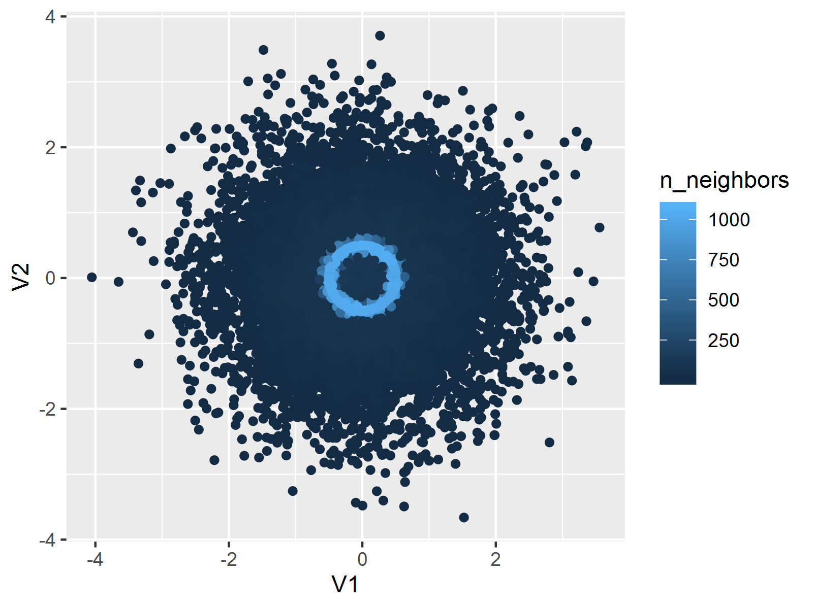

第 4 章 图库
他解释说：“你要明白，我认为人的大脑原本像一间空空的屋子，必须有选择地用一些家具填满它。只有笨蛋才把他碰到的各种各样的破烂都塞进去。这样的话，那些可能用得上的知识就被挤了出来；或者，充其量也只是把那些破烂同其它东西混杂在一块儿。结果，在需要时却难得找到了。因此，一个善于工作的人，对于将什么东西纳入自己的头脑里是非常仔细的。他只会容纳那些工作时用得着的工具，而且又将这些工具分门别类，安排得井然有序。如果认为这间屋子的墙壁富有弹性，可以随意扩展，那就大错特错了。毫无疑问，总有一天，当你增加点滴知识时，却把从前熟悉的知识给忘记了。因此，不要让无用的信息挤掉那些有用的信息，这一点是至关重要的。”
— 柯南·道尔《血字的研究》
本章中，我们结合 R 语言中的相关函数以及数据实例对各种统计图形依次作出介绍。从第 4.1 节到 4.27 节的所有图形都是基于 graphics 包所作，其后的图形均来自于其它函数包。图形的介绍顺序大致按函数的字母序，但直方图、箱线图和散点图等常见图形放在前面，而饼图被有意安排在最后。
4.1 直方图
直方图（Histogram）是展示连续数据分布最常用的工具，它本质上是对密度函数的一种估计。在介绍作图方法之前我们有必要先了解一下它的基本数学思想，本节仅作简要介绍， 详细的数学理论参见 Scott (2015)。
我们知道，对于连续随机变量来说，其密度函数即为分布函数的导数：
\[\begin{equation} f(x)=F'(x)=\lim_{h\rightarrow0}\frac{F(x+h)-F(x)}{h} \tag{4.1} \end{equation}\]
因此我们不妨自然而然地从分布函数的估计出发得到密度函数的估计。当我们拿到一批数据 \(X_1,X_2,\ldots,X_n\) 时，我们最容易想到的分布函数估计就是经验分布函数：
\[\begin{equation} \hat{F}_{n}(x)=\frac{1}{n}\sum_{i=1}^{n}\mathbf{I}(X_{i}\leq x) \tag{4.2} \end{equation}\]
其中 \(\mathbf{I}(\cdot)\) 为示性函数；结合公式 (4.1) 和 (4.2) 以及示性函数的性质，我们可以直接得到以下密度函数估计：
\[\begin{equation} \hat{f}_{n}(x)=\lim_{h\rightarrow0}\frac{1}{n}\sum_{i=1}^{n}\frac{\mathbf{I}(x<X_{i}\leq x+h)}{h} \tag{4.3} \end{equation}\]
公式 (4.3) 实际上已经给出了直方图作为密度函数估计工具的基本思想：划分区间并计数有多少数据点落入该区间。实际数据不可能无限稠密，因此 \(h\rightarrow0\) 的条件往往是不可能实现的，于是我们退而求其次，只是在某一些区间段里面估计区间上的密度。首先我们将实数轴划分为若干宽度为 \(h\) 的区间（我们称 \(h\) 为“窗宽”）：
\[\begin{equation} b_{1}<b_{2}<\cdots<b_{j}<b_{j+1}<\cdots;\;b_{j+1}-b_{j}=h,\,j=1,2,\cdots \tag{4.4} \end{equation}\]
然后根据以下直方图密度估计表达式计算区间 \((b_j,b_{j+1}]\) 上的密度估计值：
\[\begin{equation} \hat{f}_{n}(x)=\frac{1}{nh}\sum_{i=1}^{n}\mathbf{I}(b_{j}<X_{i}\leq b_{j+1});\;x\in(b_{j},b_{j+1}] \tag{4.5} \end{equation}\]
最后我们将密度估计值以矩形的形式表示出来，就完成了直方图的基本制作。当然我们没有必要使用这样原始的方式制作直方图，R 中提供了 hist() 函数，其默认用法如下：
## ## Default S3 method:
## hist(x, breaks = "Sturges", freq = NULL, probability = !freq,
## include.lowest = TRUE, right = TRUE, fuzz = 1e-07, density = NULL,
## angle = 45, col = "lightgray", border = NULL,
## main = paste("Histogram of", xname), xlim = range(breaks), ylim = NULL,
## xlab = xname, ylab, axes = TRUE, plot = TRUE, labels = FALSE, nclass = NULL,
## warn.unused = TRUE, ...)其中， x 为欲估计分布的数值向量；breaks 决定了计算分段区间的方法，它可以是一个向量（依次给出区间端点），或者一个数字（决定拆分为多少段），或者一个字符串（给出计算划分区间的算法名称），或者一个函数（给出划分区间个数的方法），区间的划分直接决定了直方图的形状，因此这个参数是非常关键的； freq 和 probability 参数均取逻辑值（二者互斥），前者决定是否以频数作图，后者决定是否以概率密度作图（这种情况下矩形面积为 1）； labels 为逻辑值，决定是否将频数的数值添加到矩形条的上方；其它参数诸如 density 、 angle 、 border 均可参见低层作图函数”矩形”（ rect() ，3.4 节）。
par(mfrow = c(2, 2), mar = c(2, 3, 2, .5), mgp = c(2, .5, 0))
data(geyser, package = "MASS")
hist(geyser$waiting, main = "(1) freq = TRUE", xlab = "waiting")
hist(geyser$waiting, freq = FALSE, xlab = "waiting", main = "(2) freq = FALSE")
hist(geyser$waiting, breaks = 5, density = 10, xlab = "waiting", main = "(3) breaks = 5")
hist(geyser$waiting, breaks = 40, col = "red", xlab = "waiting", main = "(4) breaks = 40")
library(ggplot2)
library(cowplot)
p <- ggplot(aes(waiting), data = geyser)
p1 <- p + geom_histogram(breaks = seq(40, 110, by = 5))
p2 <- p + geom_histogram(breaks = seq(40, 110, by = 5), aes(y = after_stat(density)))
p3 <- p + geom_histogram(breaks = seq(40, 110, by = 10))
p4 <- p + geom_histogram(breaks = seq(42, 108, by = 2), fill = "red", color = "black")
plot_grid(p1, p2, p3, p4, labels = c(
"(1) freq = TRUE",
"(2) freq = FALSE",
"(3) breaks = 5",
"(4) breaks = 40"
), ncol = 2)图 4.1: 喷泉间隔时间直方图：（1）使用默认参数值（作频数图）；（2）概率密度直方图；（3）减小区间段数，直方图看起来更平滑（偏差大，方差小）；（4）增大区间段数，直方图更突兀（偏差小，方差大）
我们以黄石国家公园喷泉数据 geyser (Venables and Ripley 2002) 为例。图 4.1 展示了喷泉喷发间隔时间的分布情况。（1）和（2）中的直方图看起来形状完全一样，区别仅仅是前者为频数图，后者为密度图。二者在统计量上仅相差一个常数倍，但密度直方图的一个便利之处在于它可以方便地添加密度曲线，用以辅助展示数据的统计分布（图 4.2 即为一个示例）；（3）和（4）的区别在于区间划分段数，我们可以很清楚看出区间划分的多少对直方图的直接影响。关于区间划分的一些讨论可以参考 Venables and Ripley (2002)，这里我们需要特别指出的是，直方图的理论并非想象中或看起来的那么简单，窗宽也并非可以任意选择，不同的窗宽或区间划分方法会导致不同的估计误差。关于这一点，Excel 的直方图可以说是非常不可靠的，因为它把区间的划分方法完全交给了用户去选择，这样随意制作出来的直方图很可能会导致大的估计误差、掩盖数据的真实分布情况。另外一点需要提醒的是关于直方图中的密度曲线，SPSS 软件在绘制直方图时会有选项提示是否添加正态分布密度曲线，这也是完全的误导，因为数据不一定来自正态分布，添加正态分布的密度曲线显然是不合理的，相比之下，图 4.2 的做法才是真正从数据本来的分布出发得到的密度曲线。
demo("hist_geyser", package = "MSG")
df <- data.frame(
x = seq(40, 110, 5), y = 0,
xend = seq(40, 110, 5), yend = ht
)
p2 + geom_density(fill = "lightgray", color = "black") +
geom_segment(aes(x = x, y = y, xend = xend, yend = yend),
data = df, lty = 3
)
图 4.2: 直方图与密度曲线的结合：借助函数 density() 可以计算出数据的核密度估计，然后利用低层作图函数 lines() 将核密度估计曲线添加到直方图中。
直方图函数在作图完毕之后会有一些计算返回值，这些值对于进一步的作图或者分析很有用，例如区间划分端点、频数（或密度）、区间中点等等，这些信息可以被灵活应用在图形定制上 （例如图 B.7）。
由于直方图需要对连续型数据做离散分组，因此它有一个明显的缺点，就是它的形状依赖于分组的端点，例如若有好几个相同的数值正好处在分组端点上，那么我们只要稍微向左或向右移动一下分组端点，这些数据点就会被划分入不同的区间，导致矩形条的高度变化。Scott (2015) 提出了一种解决这种直方图不稳定性问题的办法叫“移动平均直方图”（Average Shifted Histogram，简称 ASH），它的思想是使用一系列移动的区间去划分数据，比如 \((b_1+ih/n,b_2+ih/n,\ldots,b_n+ih/n)\)，\(i=0,\cdots,n-1\)，最后将这 \(n\) 种划分方法的频数结果”平均”起来，就得到了 ASH 图，这样有效避免了边界点的归属问题。然而，在核密度估计理论已经非常完备的今天，我们几乎没有必要再用这种技巧去克服原来的问题了，毕竟 ASH 与核密度估计比起来显得还是太粗糙。图 4.2 的核密度曲线基于函数 density() 计算而来，它的参数包括核函数和窗宽等，实际应用中我们可能需要尝试不同的核函数以及窗宽值，Venables and Ripley (2002) 第 5.6 小节介绍了一些选择的经验可供参考。
4.2 茎叶图
茎叶图（Stem-and-Leaf Plot）与直方图的功能类似，也是展示数据密度的一种工具，但相比之下茎叶图对密度的刻画显得非常粗略，而且对原始数据通常会作舍入处理，它只是在早期计算机尚不发达时对于手工整理数据来说比较方便。茎叶图的整体形状如同植物的茎和叶，对于一个数据，通常取其 \(10^n\) 部分为茎（\(n\) 视所有数据的数量级而定），剩下的尾数为叶，放置于茎旁，这样每隔 \(m10^n\) 就对数据作一次归类汇总，将落入区间 \([km10^{n},\ (k+1)m10^{n}]\) 的数据汇集为叶子（\(k,m\) 为整数，\(m\) 通常取 1，\(k=1,2,3,\cdots\)），我们不妨称这种区间为一个“节”，节的长度与直方图的“窗宽”本质上是同样的概念。显然，叶子越长则表明该节上数据频数越高。
R 中茎叶图的函数为 stem()，其用法为：
## stem(x, scale = 1, width = 80, atom = 1e-08)参数 scale 控制着 \(m\)，即节与节之间的长度（ scale 越大则 \(m\) 越小）； width 控制了茎叶图的宽度，若叶子的长度超出了这个设置，则叶子会被截取到长度 width ，然后以一个整数表示后面尚有多少片叶子没有被画出来。
下面我们以 datasets 包中 islands 数据为例说明茎叶图的作法。该数据记录了世界上各大陆地块的面积大小，原始数据前 10 条如下（单位：千平方英里）：
## Africa Antarctica Asia Australia Axel Heiberg Baffin
## 11506 5500 16988 2968 16 184
## Banks Borneo Britain Celebes
## 23 280 84 73可以看出，以上数据中最大的数量级为 \(10^{4}\)，而大部分数据的数量级集中在 \(10^{1}\)，因此茎上的数量级取作 \(10^{3}\) 相对比较合适—更大的数量级会导致茎的节数非常少，对分布的刻画过于粗略；而更小的数量级会导致节数过多，使得茎叶图几乎退化为数据的原始表示，这样也难以看出数据的集中趋势。下图展示了 48 块大陆块面积的分布，该茎叶图窗宽为 \(2\times10^{3}\)，图中注明了原始数据小数点位置在 | 后面三位数处，因此我们从图中“还原”原始数据时，需要用（“茎的区间‘+’叶”）\(\times10^{3}\)。
##
## The decimal point is 3 digit(s) to the right of the |
##
## 0 | 00000000000000000000000000000111111222338
## 2 | 07
## 4 | 5
## 6 | 8
## 8 | 4
## 10 | 5
## 12 |
## 14 |
## 16 | 0##
## The decimal point is 3 digit(s) to the right of the |
##
## 0 | 00000000+21
## 2 | 07
## 4 | 5
## 6 | 8
## 8 | 4
## 10 | 5
## 12 |
## 14 |
## 16 | 0可以明显看出，这些面积数据是严重右偏的，即：少数陆地块的面积非常大，而大多数陆地块的面积相对来说都很小。事实上，主要是七大洲的大陆块面积非常大，而其它岛屿诸如海南岛、帝汶岛、九洲岛等面积都相对较小。
我们以上图为例说明一下茎叶图的制作过程及其相应解释。首先我们将原始数据除以 \(10^{3}\)，并四舍五入到小数点后的一位数：
## [1] 0.0 0.0 0.0 0.0 0.0 0.0 0.0 0.0 0.0 0.0 0.0 0.0 0.0 0.0 0.0
## [16] 0.0 0.0 0.0 0.0 0.0 0.0 0.0 0.0 0.0 0.0 0.0 0.0 0.0 0.0 0.1
## [31] 0.1 0.1 0.1 0.1 0.1 0.2 0.2 0.2 0.3 0.3 0.8 3.0 3.7 5.5 6.8
## [46] 9.4 11.5 17.0然后从 0 到 \(18\times10^{3}\)、以 \(2\times10^{3}\) 为窗宽，分段整理数据，每一段（节）中依次放置落入该段的数据的小数位，堆砌起来便形成了茎叶图的叶子。例如 \(11.5\) 落入了 \([10,12]\) 的区间，我们就将尾数 5 放在 10 的右边；类似地，17.0 在 \([16,18]\) 之间，我们将 0 放在 16 右边；关于茎叶图顶部的一长串 0 的解释此处不再赘述。
下图是利用泊松分布（\(\lambda=10\)）随机数生成的茎叶图，可以看出数据密度在 10 附近最高，这与理论相符。由于窗宽为 1，不存在舍入问题，所以图形可以还原到原始数据，请读者自行对应数据观察茎叶图。
## [1] 4 4 4 5 5 5 5 5 6 6 6 6 6 7 7 7 7 7 7 7 7 7 8 8 8
## [26] 8 8 8 8 8 9 9 9 9 9 9 10 10 10 10 11 11 11 11 11 11 11 11 11 11
## [51] 11 11 11 11 12 12 12 12 12 12 12 12 12 12 12 13 13 13 13 13 13 13 13 14 14
## [76] 14 14 15 15 17##
## The decimal point is at the |
##
## 4 | 000
## 5 | 00000
## 6 | 00000
## 7 | 000000000
## 8 | 00000000
## 9 | 000000
## 10 | 0000
## 11 | 00000000000000
## 12 | 00000000000
## 13 | 00000000
## 14 | 0000
## 15 | 00
## 16 |
## 17 | 0经过前面的说明，现在我们不妨将茎叶图简单理解为横放着的直方图，只是茎叶图通常都以某个便利的整数为窗宽，不如直方图那样精细。此外，茎叶图曾经的优势（简单、可手工绘制）在今天这个计算机时代也显得并不突出，因此，除非特殊情况，我们建议主要使用直方图作为密度函数估计工具。
4.3 箱线图
箱线图（Box Plot 或 Box-and-Whisker Plot）主要是从四分位数的角度出发 描述数据的分布，它通过最大值（\(Q_4\)）、上四分位数（\(Q_3\)）、中位数（\(Q_2\)）、下四分位数（\(Q_1\)）和最小值（\(Q_0\)）五处位置来获取一维数据的分布概况。我们知道，这五处位置之间依次包含了四段数据，每段中数据量均为总数据量的 \(1/4\)。通过每一段数据占据的长度，我们可以大致推断出数据的集中或离散趋势（长度越短，说明数据在该区间上越密集，反之则稀疏）。
R 中相应的函数为 boxplot()，其用法如下：
## ## Default S3 method:
## boxplot(x, ..., range = 1.5, width = NULL, varwidth = FALSE, notch = FALSE,
## outline = TRUE, names, plot = TRUE, border = par("fg"), col = "lightgray",
## log = "", pars = list(boxwex = 0.8, staplewex = 0.5, outwex = 0.5),
## ann = !add, horizontal = FALSE, add = FALSE, at = NULL)## ## S3 method for class 'formula'
## boxplot(formula, data = NULL, ..., subset, na.action = NULL,
## xlab = mklab(y_var = horizontal), ylab = mklab(y_var = !horizontal),
## add = FALSE, ann = !add, horizontal = FALSE, drop = FALSE, sep = ".",
## lex.order = FALSE)因为 boxplot() 是一个泛型函数，所以它可以适应不同的参数类型。目前它支持两种参数类型：公式（ formula ）和数据，后者对我们来说可能更容易理解（给一批数据、作相应的箱线图），而前者在某些情况下更为方便，后面我们会举例说明。参数 x 为一个数值向量或者列表，若为列表则对列表中每一个子对象依次作出箱线图； range 是一个延伸倍数，决定了箱线图的末端（须）延伸到什么位置，这主要是考虑到离群点的原因，在数据中存在离群点的情况下，将箱线图末端直接延伸到最大值和最小值对描述数据分布来说并不合适（图形缺乏稳健性），所以 R 中的箱线图默认只将图形延伸到离箱子两端 \(\mathrm{range}\times(Q_3-Q_1)\) 处，即上下四分位数分别加/减内四分位距（Interquartile
Range，简称 \(\text{IQR}\equiv Q_3-Q_1\)）的倍数，超过这个范围的数据点就被视作离群点，在图中直接以点的形式表示出来； width 给定箱子的宽度； varwidth 为逻辑值，若为 TRUE，那么箱子的宽度与样本量的平方根成比例，这在多批数据同时画多个箱线图时比较有用，能进一步反映出样本量的大小； notch 也是一个有用的逻辑参数，它决定了是否在箱子上画凹槽，凹槽所表示的实际上是中位数的一个区间估计，其计算式为 \(Q_2+/-1.58\mathrm{IQR}/\sqrt{n}\)
(Robert McGill and Larsen 1978; Chambers et al. 1983)，区间置信水平为 95%，在比较两组数据中位数差异时，我们只需要观察箱线图的凹槽是否有重叠部分，若两个凹槽互不交叠，那么说明这两组数据的中位数有显著差异（P 值小于 0.05）； horizontal 为逻辑值，设定箱线图是否水平放置； add 设置是否将箱线图添加到现有图形上（例：图 4.32）；其它参数诸如设置箱子颜色、位置、更详细的宽度等参见 ?boxplot。
boxplot(count ~ spray, data = InsectSprays,
col = "lightgray", horizontal = TRUE, pch = 4)
ggplot(aes(y = count, x = spray), data = InsectSprays) +
geom_boxplot(outlier.shape = 4) +
coord_flip()图 4.3: 昆虫数目箱线图：六种杀虫剂下昆虫的数目分布。
绘制单个箱线图时只需要给 boxplot() 传入一个数值向量即可，如：boxplot(rnorm(100))；这里我们主要使用公式型的参数，以 datasets 包中的杀虫剂数据 InsectSprays 为例。该数据有两列，第一列为昆虫数目，第二列为杀虫剂种类（ABCDEF），这里是随机抽取的 10 列数据：
## count spray
## 48 4 D
## 24 13 B
## 41 4 D
## 60 4 E
## 25 0 C
## 57 3 E
## 46 5 D
## 45 5 D
## 68 10 F
## 20 17 B为了了解杀虫剂的效果，我们需要对各种杀虫剂下昆虫的数目作出比较。图 4.3 是一个简单的箱线图展示，不难看出，除了 B 和 D 对应的昆虫数据呈左偏形态外，其它组均有右偏趋势，看起来各组数据的平均水平差异比较明显；另外注意观察图中的两个离群点（以 “\(\times\)” 表示）。总体看来，C 的效果最好。事实上，我们可以对这个数据作方差分析，检验杀虫剂类型对昆虫数目是否有显著影响：
## Df Sum Sq Mean Sq F value Pr(>F)
## spray 5 2669 533.8 34.7 <2e-16 ***
## Residuals 66 1015 15.4
## ---
## Signif. codes: 0 '***' 0.001 '**' 0.01 '*' 0.05 '.' 0.1 ' ' 1上述分析告诉我们杀虫剂类型有显著影响（P 值接近于 0），也印证了我们对图形的观察。
x <- rnorm(150)
y <- rnorm(50, 0.8)
boxplot(list(x, y),
names = c("x", "y"), horizontal = TRUE,
col = 2:3, notch = TRUE, varwidth = TRUE
)
ggplot(
data = data.frame(
num = c(x, y),
idx = c(rep("x", 150), rep("y", 50))
),
aes(y = num, fill = idx)
) +
geom_boxplot(notch = TRUE) +
coord_flip()
# Wilcoxon检验的P值
wilcox.test(x, y)$p.value## [1] 2.845129e-05图 4.4: 箱线图的凹槽与统计推断：从凹槽不交叠的情况来看，两样本中位数有显著差异。
最后我们再以一个模拟数据的例子展示箱线图凹槽的功能。这里我们分别从正态分布 \(\mathrm{N}(0,1)\) 和 \(\mathrm{N}(0.5,1)\) 中各自产生 150 和 50 个随机数，然后作箱线图比较两组数据中间位置的差异。图 4.4 为一次模拟的结果，图中的凹槽表明了两组数据的中位数有显著差异，Wilcoxon 秩和检验也证实了这一结论。此外，该图还使用了 varwidth 参数以表明两组数据样本量的大小不同。
4.4 条形图
library(RColorBrewer) # 用分类调色板
par(mfrow = c(2, 1), mar = c(3, 2.5, 0.5, 0.1))
death <- t(VADeaths)[, 5:1]
barplot(death, col = brewer.pal(4, "Set1"))
barplot(death,
col = brewer.pal(4, "Set1"), beside = TRUE,
legend.text = TRUE
)
# ggplot2
reshape_VADeaths <- transform(
expand.grid(
sex = colnames(VADeaths),
age = rownames(VADeaths)
),
rates = as.vector(t(VADeaths))
)
p <- ggplot(data = reshape_VADeaths, aes(x = age, y = rates, fill = sex))
p1 <- p + geom_col(position = "stack")
p2 <- p + geom_col(position = "dodge")
plot_grid(p1, p2, ncol = 1)图 4.5: 弗吉尼亚死亡率数据条形图： 堆砌和并列的条形图效果
如同前面 1.5 节中曾经提到的，条形图目前是各种统计图形中应用最广泛的，但条形图所能展示的统计量比较贫乏：它只能以矩形条的长度展示原始数值，对数据没有任何概括或推断。
R 中条形图的函数为 barplot()，用法如下：
## ## Default S3 method:
## barplot(height, width = 1, space = NULL, names.arg = NULL, legend.text = NULL,
## beside = FALSE, horiz = FALSE, density = NULL, angle = 45, col = NULL,
## border = par("fg"), main = NULL, sub = NULL, xlab = NULL, ylab = NULL,
## xlim = NULL, ylim = NULL, xpd = TRUE, log = "", axes = TRUE,
## axisnames = TRUE, cex.axis = par("cex.axis"), cex.names = par("cex.axis"),
## inside = TRUE, plot = TRUE, axis.lty = 0, offset = 0, add = FALSE,
## ann = !add && par("ann"), args.legend = NULL, ...)条形图的主要参数是 height，它指定了长条的长度，这个参数可以接受一个数值向量或者一个数值矩阵作为参数，前者容易理解，后者稍有些复杂，当传入一个矩阵时，条形图针对矩阵的每一列画图，若 beside 为 FALSE，则矩阵每一列占据一条的位置，该条由若干矩形堆砌而成，这些矩形的高度对应着矩阵的行数据，若 beside 为 TRUE，这些矩形则并排排列而非堆砌； width 可以设置条的宽度； space 用以设置条之间的间距； names.arg 为条形图的标签，即每一条的名称； legend.text 参数在 height 为矩阵时比较有用，可以用来添加图例； horiz 用以设置条形图的方向（水平或垂直）； density 、 angle 等参数可以参考矩形的章节（3.4 节）； plot 为逻辑值，决定是否将条形图添加到现有图形上。
图 4.5
下图展示了参数 beside 和 legend.text 的效果。该图以 1940 年弗吉尼亚州分年龄组、分地区和分性别死亡率数据 VADeaths 为基础，展示了各组之间死亡率的差异，其中堆砌的条形图容易比较各年龄组总死亡率的大小，显然年龄越高死亡率越大，而并列的条形图容易比较组内的城乡和性别差异，一般说来，男性死亡率高于女性，农村男性死亡率低于城市男性，但女性的城乡差异没有明显规律。由于人眼对长度比比例更敏感（例如在区分城乡和性别差异时，图 4.5
的上图就不如下图直观），所以我们制图时要考虑清楚我们想展示的是数据的哪一方面，即：将最关键的信息用最能激发视觉感知的形式表现出来。
## Rural Male Rural Female Urban Male Urban Female
## 50-54 11.7 8.7 15.4 8.4
## 55-59 18.1 11.7 24.3 13.6
## 60-64 26.9 20.3 37.0 19.3
## 65-69 41.0 30.9 54.6 35.1
## 70-74 66.0 54.3 71.1 50.04.5 散点图
散点图通常用来展示两个变量之间的关系，这种关系可能是线性或非线性的。图中每一个点的横纵坐标都分别对应两个变量各自的观测值，因此散点所反映出来的趋势也就是两个变量之间的关系。
R 中散点图的函数为 plot.default()，但由于 plot() 是泛型函数（参见 B.2 小节），通常我们只需要提供两个数值型向量给 plot() 即可画散点图，或者提供一个两列的矩阵或数据框。函数 plot.default() 的用法如下：
## ## Default S3 method:
## plot(x, y = NULL, type = "p", xlim = NULL, ylim = NULL, log = "", main = NULL,
## sub = NULL, xlab = NULL, ylab = NULL, ann = par("ann"), axes = TRUE,
## frame.plot = axes, panel.first = NULL, panel.last = NULL, asp = NA,
## xgap.axis = NA, ygap.axis = NA, ...)其中若 x 是一个两列的矩阵或数据框，则无需再提供 y ，否则 x 和 y 都必须是数值型向量；其它参数均已在 B.2 小节中介绍。
demo("alphaDemo", package = "MSG")
p <- ggplot(BinormCircle, aes(V1, V2)) +
theme_void() +
theme(axis.ticks = element_blank(),
axis.text = element_blank(),
axis.title = element_blank(),
plot.background = element_rect(linetype = "solid",color = "black")
)
p1 <- p + geom_point(color = rgb(1, 0, 0))
p2 <- p + geom_point(color = rgb(1, 0, 0), alpha = 0.01)
plot_grid(p1, p2, ncol = 2)图 4.6: 半透明散点图中的规律：左图是一幅普通的散点图，图中几乎看不出数据有任何异常特征；右图中对点使用了透明度为 0.01 的红色，图中立即显示出一个深色的圆圈，表明该圆圈上集中了大量数据点。
图 4.6
展示了一个人造数据的散点图：我们设计了 2 万个样本，其中有 1 万个样本点来自于两个独立的标准正态分布，另 1 万个样本点的坐标落在半径为 0.5 的圆上，最后将这 2 万个样本拼起来并打乱顺序。该数据收录在 MSG 包中，名为 BinormCircle。虽然数据只有两个变量，但我们用普通的统计模型和数值分析几乎无法找出数据的特征，例如线性回归显示两个变量 V1 和 V2 的回归系数非常不显著：
## V1 V2
## 1 0.889 -1.764
## 2 0.072 -0.495
## 3 0.123 -0.180
## 4 -0.499 0.030
## 5 0.252 0.432
## 6 0.450 0.218## Estimate Std. Error t value Pr(>|t|)
## (Intercept) -0.006085156 0.005258164 -1.1572776 0.2471728
## V1 0.003988851 0.007015317 0.5685917 0.5696397换用高阶回归的结果也类似，无论回归阶数为多少，系数均不显著，这一点从数据的构造上就可以知道（理论上两个变量的相关系数为 0）。由于样本量太大，普通的散点图上点与点之间严重重叠，所以也很难看出散点图有何异常，而使用半透明色的散点图则很容易看出，在大量的数据点中，还隐藏着一个圆圈，说明有相当一部分数据分布有特殊规律。我们在网页 https://yihui.org/en/2008/09/to-see-a-circle-in-a-pile-of-sand/ 上给出了其它五种不同的解决方案，都可以从图形的角度反映出这种规律。本章 4.21 小节也将以平滑散点图的方式再回顾这批数据。
4.6 关联图
## Eye
## Hair Brown Blue Hazel Green
## Black 68 20 15 5
## Brown 119 84 54 29
## Red 26 17 14 14
## Blond 7 94 10 16图 4.7: 眼睛颜色与头发颜色的关联图
## [1] 2.325287e-25关联图（Cohen-Friendly Association Plot）是展示二维列联表数据的一种工具 (Cohen 1980; M. Friendly 1992)，它主要是基于列联表的独立性检验理论（Pearson \(\chi^{2}\) 检验）生成的图形。
我们知道，对于一个 \(r\times c\) 列联表，\(\chi^{2}\) 统计量的定义为如下平方和形式：
\[\begin{equation} \chi^{2}=\sum_{i=1}^{r}\sum_{j=1}^{c}d_{ij}^{2};\;\; d_{ij}=\frac{f_{ij}-e_{ij}}{\sqrt{e_{ij}}} \tag{4.6} \end{equation}\]
其中，\(f_{ij}\) 为单元格中的观测频数，\(e_{ij}\) 为期望频数，二者相差越大，则会导致检验统计量的值越大，说明行变量和列变量越不独立。关联图所展示内容的正是这种差异，它的设计思路是，将图形同样以 \(r\times c\) 的形式布局，每一个 “单元格” 中用一个矩形表示观测频数和期望频数的信息，具体来说，矩形的高度与 Pearson 残差 \(f_{ij}-e_{ij}\) 成比例，宽度与期望频数 \(\sqrt{e_{ij}}\) 成比例，这样一来，矩形的面积便与 \(d_{ij}\) 成比例；此外，矩形自身带有方向，朝上表示残差为正，朝下则为负，不同方向的矩形同时也以不同颜色区分开来。
R 中关联图的函数为 assocplot()，用法如下：
## assocplot(x, col = c("black", "red"), space = 0.3, main = NULL, xlab = NULL,
## ylab = NULL)其中 x 为一个列联表数据（或者矩阵）； col 为朝上和朝下矩形的颜色； space 用来设置矩形之间的间距。
图 4.7
是关于 HairEyeColor 数据的关联图。原始数据为一个三维数组，首先我们在性别维度上将数据汇总，得到眼睛颜色（棕蓝褐绿）和头发颜色（黑棕红金）人数的列联表。我们关心的问题是头发颜色与眼睛颜色之间是否存在关联，当然我们可以马上用函数 chisq.test() 作检验，但是检验的结果非常单一，我们只能知道零假设（独立）可否被拒绝，而图 4.7 则细致展示了数据的内部信息，例如从图中我们可以清楚看到，并非所有单元格都与期望频数有很大差异，只是少数几个单元格贡献了较大的 \(\chi^{2}\) 值，如金发碧眼、金发棕眼等；事实上，这批数据为调查数据，眼睛颜色和头发颜色都为受访者（Delaware 大学的 592 名学生）自己填写，我们观察到金发碧眼单元格的期望频数和实际频数差异甚大，据说这背后有一则有趣的故事：由于“金发碧眼”是大家公认的美的标准，因此有些学生在填问卷时故意偏向于填写“金发碧眼”，导致“金发碧眼”的实际频数严重偏高2。从图 4.7 的代码输出中我们知道，\(\chi^{2}\) 检验可以拒绝零假设，眼睛的颜色与头发的颜色并不独立，二者之间存在某种关联关系，然而这种关联关系是由于生物或遗传原因引起还是受访者有意隐瞒自己的信息，则需要我们进一步斟酌了。
在 vcd 包 (Meyer et al. 2023) 中有一个类似的关联图函数 assoc()，但功能比本节中介绍的函数要更强大，详细介绍参见 Meyer, Zeileis, and Hornik (2006; Zeileis, Meyer, and Hornik 2007)。
4.7 条件密度图
条件密度图（Conditional Density Plot），顾名思义，展示的是一个变量的条件密度，确切的说是一个分类变量 \(Y\) 相对一个连续变量 \(X\) 的条件密度 \(P(Y|X)\)。假设 \(Y\) 的取值为 \(1,2,\cdots,k\)，那么条件密度图将按照 \(X\) 的取值从小到大在纵轴方向上依次展示出 \(Y=i\;(i=1,2,\cdots,k)\) 的条件概率分布比例 \(P_{i}=P(Y=i|X=x)\)，这些比例大小沿横轴方向上以多边形表示，在任一一个 \(X\) 点，所有比例之和均为 1，这个性质是显而易见的：
\[\begin{equation} \sum_{i=1}^{k}P(Y=i|X=x)=1;\;\forall x \tag{4.7} \end{equation}\]
R 中条件密度图的函数为 cdplot()，它主要是基于密度函数 density() 完成条件密度的计算 (Hofmann and Theus 2005)，其用法如下：
## ## Default S3 method:
## cdplot(x, y, plot = TRUE, tol.ylab = 0.05, ylevels = NULL, bw = "nrd0",
## n = 512, from = NULL, to = NULL, col = NULL, border = 1, main = "",
## xlab = NULL, ylab = NULL, yaxlabels = NULL, xlim = NULL, ylim = c(0, 1),
## weights = NULL, ...)## ## S3 method for class 'formula'
## cdplot(formula, data = list(), plot = TRUE, tol.ylab = 0.05, ylevels = NULL,
## bw = "nrd0", n = 512, from = NULL, to = NULL, col = NULL, border = 1,
## main = "", xlab = NULL, ylab = NULL, yaxlabels = NULL, xlim = NULL,
## ylim = c(0, 1), ..., subset = NULL, weights = NULL)函数 cdplot() 是泛型函数，它可以支持两种参数类型：直接输入两个数值向量 x 和 y 或者一个公式 y~x。 x 为条件变量 \(X\)，它是一个数值向量， y 是一个因子向量，即离散变量 \(Y\)； plot 为逻辑值，决定了是否作出图形（或者仅仅是计算而不作图）； ylevels 给出因子的取值水平（或者分类的名称）， bw 、 n 、 from 和 to 都将被传递给 density() 函数以计算密度值，请参考 density() 帮助文件； col 给定一个颜色向量用以代表 \(Y\) 的各种取值（默认为不同深浅的灰色）； border 为多边形的边线颜色；其它参数诸如标题、坐标轴范围等此处略去。
demo("cdplotDemo", package = "MSG")
fail <- factor(
c(2, 2, 2, 2, 1, 1, 1, 1, 1, 1, 2, 1,
2, 1, 1, 1, 1, 2, 1, 1, 1, 1, 1),
levels = 2:1,
labels = c("yes", "no")
)
temperature = c(53, 57, 58, 63, 66, 67, 67, 67, 68, 69, 70,
70, 70, 70, 72, 73, 75, 75, 76, 76, 78, 79, 81
)
fail_temperature <- data.frame(fail = fail, temperature = temperature)
ggplot(fail_temperature, aes(temperature, after_stat(count), fill = fail)) +
geom_density(position = "fill") +
geom_point(aes(temperature, c(0.75, 0.25)[as.integer(fail)]),
shape = 21, colour = "blue", fill = "yellow") +
scale_x_continuous(expand = c(0, 0)) +
scale_y_continuous("fail", expand = c(0, 0), breaks = c(0.25, 0.75),
labels = c("no", "yes"),
sec.axis = dup_axis(name = NULL,
breaks = seq(0, 1, 0.2),
labels = c(0, "", 0.4, "", 0.8, ""))
) +
scale_fill_manual(values = c("red", "lightblue")) +
theme_classic() +
theme(legend.position = "none")

图 4.8: 航天飞机 O 型环在不同温度下失效的条件密度图：随着温度升高，O 型环越来越不容易失效。
这里我们以美国国家航空和宇宙航行局的一批 O 型环（O-ring，一种由橡胶或塑料制成的平环，用作垫圈）失效数据为例，这批数据有两个变量：温度变量和是否失效的变量。为了探索温度对 O 型环失效的影响，我们可以使用诸如 Logistic 回归之类的统计模型去计算、分析，而这里我们用条件密度图来展示温度的影响，如图 4.8。由于因变量是一个二分类变量，图中相应有两个多边形（带颜色的区域）分别表示是否失效，从图中我们可以清楚观察到，随着温度的上升，失效的可能性越来越小（下面的多边形高度越来越高），但失效的概率与温度并不是简单的线性关系，例如 55 到 65 之间的温度上升会使得失效概率迅速下降，而当气温更高的时候，失效概率下降的速度会减缓。为了更清楚地观察条件密度图的效果，我们也将原始数据以点的形式添加到图中；不难发现，O 型环失效的情况大多对应着相对较低的温度。
这里需要提醒读者注意的是，密度值的计算和估计与数据样本量大小有关系，小的样本量可能会导致密度估计的不精确，进而导致图形的误导性，因此使用条件密度图的时候务必注意样本量的问题。
4.8 等高图/等高线
等高图（Contour Plot）和等高线（Contour Line）表面上看起来是二维形式，但实际上展示的是三维数据。我们知道，三维图形往往比二维图形看起来更具有吸引力，然而在平面上展示三维图形也有其缺陷，最主要的就是视角问题，一幅三维图形可以有无数种视角，正视、侧视、俯视可能都会看到不同的信息，而且各种角度下可能都有一部分数据被前面的数据挡住而不能被看到，当然这些问题都可以通过更灵活的图形设备克服，如 rgl 包 (Adler and Murdoch 2024)，但是在更多的情况下，我们的图形都必须展示在静态介质上（如书籍、论文等），我们不可能在纸面上拖动鼠标对图形进行交互式操作，因此，我们需要等高图这样一种以二维形式展示三维数据的工具。
图 4.9: 网格数据的示意图：体会 x、y 与 z 的对应关系
首先我们需要理解等高图所展示数据的形式，因为它与我们想象的三维数据有所不同：并非三个数值向量，而是两个数值向量 x、y 和一个相应的矩阵 z。我们不妨将数据的形式想象为一座山峰，两个数值向量分别是横向和纵向的位置（如经纬度），第三维数据是每一种横纵向位置点组合上的高度，而横纵交叉组合之后形成的是一个网格，矩阵 z 则是这个网格上的高度数值，用数学式子表示这种关系就是 \(z_{ij}=f(x_{i},y_{j})\)。图 4.9 为这种网格数据的示意图，请读者自行体会。
所谓等高线，就是将平面上对应的 z 值（高度）相等的点连接起来形成的线。同样，我们可以以一座山峰来想象：在同一海拔高度上围绕山峰一圈的线就是一条等高线。图 4.9 中的连线即等高线，如实线表示的是高度为 2 的点，而虚线表示高度为 1 的点。注意等高线之间不可能相交，因为同一点不可能同时有两种高度。
等高线上通常会有数字表示高度，从这些数字我们不难想象出三维的山峰的形状，从这个意义上来说，等高图本质上也是一种三维图示方法。
R 中等高图的函数为 contour()，同时 grDevices 包中也提供了等高线的计算函数 contourLines()，用法分别如下：
## ## Default S3 method:
## contour(x = seq(0, 1, length.out = nrow(z)),
## y = seq(0, 1, length.out = ncol(z)), z, nlevels = 10,
## levels = pretty(zlim, nlevels), labels = NULL,
## xlim = range(x, finite = TRUE), ylim = range(y, finite = TRUE),
## zlim = range(z, finite = TRUE), labcex = 0.6, drawlabels = TRUE,
## method = "flattest", vfont, axes = TRUE, frame.plot = axes, col = par("fg"),
## lty = par("lty"), lwd = par("lwd"), add = FALSE, ...)## contourLines(x = seq(0, 1, length.out = nrow(z)),
## y = seq(0, 1, length.out = ncol(z)), z, nlevels = 10,
## levels = pretty(range(z, na.rm = TRUE), nlevels))参数 x 、 y 与 z 此处不再介绍； nlevels 可以设定等高线的条数、调整等高线的疏密； levels 设定一系列等高线的 z 值，只有这些值或者这些值附近的点才会被连起来； labels 为等高线上的标记字符串，默认是高度的数值； xlim 、 ylim 和 zlim 设定分别设定 x 、 y 与 z 的范围，默认从数据中获得； method 设定等高线的画法，有三种取值：'simple'（在等高线的末端加标签、标签与等高线重叠）、'edge'（在等高线的末端加标签、标签嵌在等高线内）或 'flattest'（在等高线最平缓的地方加标签、嵌在等高线内）；其它参数用来调整等高图的外观，此处略去不介绍。
## KernSmooth 2.23 loaded
## Copyright M. P. Wand 1997-2009est <- bkde2D(x, apply(x, 2, dpik))
contour(est$x1, est$x2, est$fhat,
nlevels = 15, col = "darkgreen",
vfont = c("sans serif", "plain"),
xlab = "预期寿命",
ylab = "高学历人数"
)
points(x, pch = 20)
est_tidy <- data.frame(
life = rep(est$x1, length(est$x2)),
edu = rep(est$x2, each = length(est$x1)),
z = as.vector(est$fhat)
)
levels <- pretty(range(est_tidy$z, finite = TRUE), 15)
ggplot(est_tidy, aes(life, edu)) +
geom_contour(aes(z = z), breaks = levels, colour = "darkgreen") +
geom_point(aes(Life.Expectancy, High.Edu.NO), data = x) +
labs(x ="预期寿命", y = "高学历人数") +
theme_bw()
图 4.10: 2005 年中国 31 地区国民预期寿命和高学历人数密度等高图
图 4.10
利用等高图展示了一个聚类现象。数据来源于 2005 年中国统计年鉴，数值参见 MSG 包中的 ChinaLifeEdu 数据，这里使用了其中两个变量：人口预期寿命（实际数据来自 2000 年）和高学历人口数量（定义为大专以上学历人数）。首先我们对这二维变量利用 KernSmooth 包 (Wand 2024) 进行核密度估计，得到二维核密度值（一个矩阵），然后用两个原始变量以及这个密度值矩阵作等高图。由于密度值反映的是某个位置上数据的密集程度，图 4.10 所能揭示的现象是：中国 31 省市自治区在人口预期寿命和高学历人口数量上呈现出聚类的特征，图中密度值大的区域主要有中部、右上和左下三个，东中西格局比较明显，即：东部地区分布在图中右上角，中部省市分布在图中中部，西部地区集中在图中的左下角，对照图 4.32 可以知道聚类的具体地区名称，就更能理解这里”聚类”的含义了。关于这批数据的分析，我们在 4.26 小节仍会继续，这里不再深入。
par(mar = rep(0, 4)) # 继续前面的例子
persp(est$x1, est$x2, est$fhat, shade = 0.75, border = NA,
col = "lightblue", phi = 20, theta = 15, box = FALSE)在 graphics 包中还有一个类似的等高图函数 filled.contour()，它的原理完全类似，只是它用颜色来区分高度值的大小并且有颜色图例，看起来可能更美观一些，4.12 小节中我们会详细介绍。
4.9 条件分割图
条件分割图（Conditioning Plot）的思想源自于统计学中的条件分布，即：给定某一个（或几个）变量之后看我们所关心的变量的分布情况。在条件分割图中，这种”分布”主要指的是两个变量之间的关系，通常以散点图表示。
条件分割图可以看作是对散点图的进一步深入发掘，它可以以一个或者两个条件变量作为所有数据的划分条件，条件变量在图形的边缘用灰色矩形条标记出变量的取值范围，每个矩形条对应着一幅散点图（严格来说此时应该称作”条件散点图”），这就是条件分割图的基本做法。后面我们会结合例子详细说明。
R 中条件分割图的函数为 coplot()，其用法如下：
## coplot(formula, data, given.values, panel = points, rows, columns,
## show.given = TRUE, col = par("fg"), pch = par("pch"),
## bar.bg = c(num = gray(0.8), fac = gray(0.95)),
## xlab = c(x.name, paste("Given :", a.name)),
## ylab = c(y.name, paste("Given :", b.name)), subscripts = FALSE,
## axlabels = function(f) abbreviate(levels(f)), number = 6, overlap = 0.5,
## xlim, ylim, ...)## co.intervals(x, number = 6, overlap = 0.5)参数 formula 为一个公式，形式为 y ~ x | a（一个条件变量）或 y ~ x | a * b（两个条件变量），“|” 后面即为条件变量； data 为数据，其中包含了 x 、 y 、 a 和 b 等变量； given.values 指定条件变量的取值范围； panel 参数为该函数的关键参数，它决定了每一幅散点图的画法，默认只是画点，我们可以将其任意扩展为我们需要的图示功能，如添加回归直线等等； rows 和 columns 参数用来设定散点图的摆放行数和列数； col 和 pch 分别设定散点图中点的颜色和样式； bar.bg 给定条件变量指示条的填充颜色； number 和 overlap 传给 co.intervals() 函数用来计算划分连续变量的区间，前者设定划分段数，后者设定区间之间的重叠比例，如：
## [,1] [,2]
## [1,] 0.5 3.5
## [2,] 2.5 5.5
## [3,] 3.5 7.5
## [4,] 5.5 8.5
## [5,] 7.5 10.5上述代码将数字 1:10 划分为了 5 段，每段长度为 2，重叠长度为 1，因此重叠比例为 0.5。条件分割图中散点图的顺序是从左到右、从下到上，分别与条件变量从左到右、从下到上的指示条对应。
par(mar = rep(0, 4), mgp = c(2, .5, 0))
library(maps)
coplot(lat ~ long | depth,
data = quakes, number = 4,
ylim = c(-45, -10.72), panel = function(x, y, ...) {
map("world2",
regions = c("New Zealand", "Fiji"),
add = TRUE, lwd = 0.1, fill = TRUE, col = "lightgray"
)
text(180, -13, "Fiji", adj = 1)
text(170, -35, "NZ")
points(x, y, col = rgb(0.2, 0.2, 0.2, .5))
}
)图 4.12: 给定震源深图的地震经纬度条件分割图：四幅散点图有相同的坐标系，震源深度按左下、右下、左上、右上的顺序逐渐增加，可以看到地震发生地点逐渐在向斐济岛靠近。
图 4.12
展示了斐济岛（Fiji）附近的地震数据 quakes，数据包括地震发生地点的经纬度和震源的深度，我们想知道该地区在地震深度上分布是否均匀，因此我们令深度变量为条件变量，看在不同条件下地震发生地点（经纬度）是否有变化。从图中可以清楚看出，随着深度值的增加，地震发生地点逐渐由西向东、由南向北移动，震源较深的地震都发生在离斐济岛很近的东南侧。另外，图 4.12
还展示了 panel 参数的用法，我们借助 maps 包 (Brownrigg 2023) 在散点图上添加了新西兰和斐济岛的地图作为辅助信息，关于 R 中地图的使用请参考 4.34 小节。
4.10 一元函数曲线图
par(mar = c(4.5, 4, 0.2, 0.2), mfrow = c(2, 1))
chippy <- function(x) sin(cos(x) * exp(-x / 2))
curve(chippy, -8, 7, n = 2008, xlab = "$x$", ylab = "$\\mathrm{chippy}(x)$")
curve(sin(x) / x, from = -20, to = 20, n = 200,
xlab = "$t$", ylab = "$\\varphi_{X}(t)$")图 4.13: 函数 \(f(x)=\mathrm{sin}(\mathrm{cos}(x)*\mathrm{exp}(-x/2))\) 的曲线图（上）和均匀分布 \(U(-1,1)\) 的特征函数图（下）。
函数曲线图没有什么特殊之处，仅仅是一条曲线而已，R 专门提供了一个函数，目的是为了节省我们去使用低层作图函数（如 lines()）的精力和时间。利用这个函数，我们可以方便地对任何一元函数作出它在某段定义域上的曲线。
R 中函数曲线图的函数为 curve()，其用法如下：
## curve(expr, from = NULL, to = NULL, n = 101, add = FALSE, type = "l",
## xname = "x", xlab = xname, ylab = NULL, log = NULL, xlim = NULL, ...)参数 expr 为一个一元函数或者该函数的名称； from 和 to 分别定义了曲线的起点和终点； n 决定将定义域分成多少个小区间，以便计算函数值并连接曲线， n 值越大曲线越光滑； add 参数决定是否将曲线添加到现有图形上； type 参数决定了作图类型（参见 B.2 小节和图 B.4）。注意：若对一个函数直接应用 plot() 函数，那么泛型函数 plot() 会自动调用 curve() 完成作图。
图 4.13 给出了函数 \(f(x)=\sin(\cos(x)*\exp(-x/2))\) 的曲线以及均匀分布 \(U(-1,1)\) 的特征函数曲线作为示例，其中特征函数为概率论中定义的 \(\varphi_{X}(t) = \mathrm{E}[\exp(itX)]\)。由于 curve() 与数据分析关系不甚密切，我们在此只是粗略介绍一下。
4.11 Cleveland 点图
在前面条形图（4.4 小节）和后面饼图（4.27 小节）的章节中我们提到了点图 (Cleveland 1985)，事实上点图和条形图的功能非常类似：条形图通过条的长度表示数值大小，点图通过点的位置表示数值大小，二者几乎可以在任何情况下互换。
par(mar = c(4, 4, 0.2, 0.2))
dotchart(t(VADeaths)[, 5:1], col = brewer.pal(4, "Set1"), pch = 19, cex = .65)图 4.14: 弗吉尼亚死亡率数据的 Cleveland 点图
R 中点图的函数为 dotchart()，用法如下：
## dotchart(x, labels = NULL, groups = NULL, gdata = NULL, offset = 1/8,
## ann = par("ann"), xaxt = par("xaxt"), frame.plot = TRUE, log = "",
## cex = par("cex"), pt.cex = cex, pch = 21, gpch = 21, bg = par("bg"),
## color = par("fg"), gcolor = par("fg"), lcolor = "gray",
## xlim = range(x[is.finite(x)]), main = NULL, xlab = NULL, ylab = NULL, ...)其中 x 与条形图的 height 参数相同，为一个数值向量或者矩阵； labels 为数据的标签；其它参数主要用来设置图形的样式如颜色、缩放倍数、点的样式等，此处略去。
图 4.14 再次以弗吉尼亚死亡率数据为例，给出了点图的展示。对比图 4.5 不难发现点图与条形图的相通之处。相比之下，点图的图形元素更加简洁，制图时不会显得太拥挤，我们可以视情况在这二者选其一作为表达工具。
4.12 颜色等高图/层次图
颜色等高图，Cleveland (1993) 又称之为层次图（Level Plot），与等高图的原理完全类似，只是颜色等高图用不同颜色表示不同高度，并配有颜色图例，用以说明图中的颜色与高度值的对应关系。读者可以回顾 4.8 小节关于等高图的介绍。
图 4.15: 新西兰 Maunga Whau 火山高度数据颜色等高图
R 中的颜色等高图函数为 filled.contour()，其用法如下：
## filled.contour(x = seq(0, 1, length.out = nrow(z)),
## y = seq(0, 1, length.out = ncol(z)), z, xlim = range(x, finite = TRUE),
## ylim = range(y, finite = TRUE), zlim = range(z, finite = TRUE),
## levels = pretty(zlim, nlevels), nlevels = 20,
## color.palette = function(n) hcl.colors(n, "YlOrRd", rev = TRUE),
## col = color.palette(length(levels) - 1), plot.title, plot.axes, key.title,
## key.axes, key.border = NULL, asp = NA, xaxs = "i", yaxs = "i", las = 1,
## axes = TRUE, frame.plot = axes, ...)这里面大多数参数与 contour() 函数完全相同，区别在于多了几个定义颜色的参数。 color.palette 给定一个调色板函数，用以生成一系列颜色供等高图填充使用，默认是青、白、粉调色板（回顾 3.1.1 小节）；如果我们不指定调色板，也可以用 col 参数指定各高度水平对应的颜色； plot.title 、 plot.axes 、 key.title 和 key.axes 四个参数分别控制着等高图的标题、等高图的坐标轴、图例的标题和图例的坐标轴，它们都能接受若干语句（statement）作为参数值。
图 4.15
描绘了新西兰 Maunga Whau 火山的地理数据 volcano，这份数据包含了在 \(10\mathrm{m}\times10\mathrm{m}\) 的地理网格上测得的火山高度，是一个 \(87\times61\) 的矩阵。仔细观察图 4.15，由于火山口的存在，颜色等高图的中部（偏左）有一小块区域的颜色并非白色，意即此处的高度比周围一圈要低。这种情况在三维图中有时未必能够迅速看出来，必须将视角调整为略向下俯视才能看到火山口。注意本图的调色板用的是”绿黄棕白”调色板，如 3.1.1 小节所介绍的，这种调色板比较适合展示地理数据。图 4.23
提供了真实的火山立体图形。
颜色等高图中的图形布局（等高图和图例实质上都是独立的图形）是用 layout() 函数（B.4 小节）完成的，这给我们带来了扩展上的不便，主要是因为颜色等高图的坐标系统与单幅统计图形的坐标系统并不一样，例如我们无法在作完一幅等高图之后再往图中添加诸如标题、坐标轴等图形元素，这种情况下，我们不妨采用另一种类似的图形— 颜色图，参见 4.14 小节。
4.13 四瓣图
四瓣图（Fourfold Plot）是用来查看 \(2\times2\times k\) 列联表中两个二分变量之间关联关系的一种图示工具，它主要是基于二维列联表的检验理论而建立起来的 (Michael Friendly 1994)。
表 4.1 是一个典型的二维列联表，通常我们想检验的是行变量与列变量是否独立；前面 4.6 小节中曾经利用 \(\chi^{2}\) 检验构造了关联图，这里我们从优比（Odds Ratio，OR）的角度出发对列联表进行检验。
首先我们定义以下二式分别为在因素出现和不出现的情况下事件的发生率（医学上常称为风险）：
\[\begin{equation} \frac{P_{1}}{P_{1}+P_{3}};\;\;\frac{P_{2}}{P_{2}+P_{4}} \tag{4.8} \end{equation}\]
进而我们用这二式之比得到优比：
\[\begin{equation} \mathrm{OR}\equiv\frac{P_{1}}{P_{1}+P_{3}}/\frac{P_{2}}{P_{2}+P_{4}}=\frac{P_{1}(P_{2}+P_{4})}{P_{2}(P_{1}+P_{3})} \tag{4.9} \end{equation}\]
| 事件 | ||
|---|---|---|
| 发生 不发生 | ||
| 因素 有 | \(P_{1}\) \(P_{3}\) | \(P_{1}+P_{3}\) |
| 无 | \(P_{2}\) \(P_{4}\) | \(P_{2}+P_{4}\) |
| \(P_{1}+P_{2}\) \(P_{3}+P_{4}\) |
由于通常情况下事件发生的几率都比较小（尤其是医学上的疾病），即 \(P_{1}\) 相对 \(P_{3}\) 来说较小，\(P_{2}\) 相对 \(P_{4}\) 来说较小，因此 (4.9) 式可以近似用 (4.10) 式代替：
\[\begin{equation} \mathrm{OR}\approx\Psi\equiv\frac{P_{1}P_{4}}{P_{2}P_{3}} \tag{4.10} \end{equation}\]
我们记各单元格的样本实现值分别为 \(a,b,c,d\)；如果事件和因素相互独立，那么因素是否发生对事件是否发生（或发生率）没有影响，因此在零假设下优比的样本实现值 \(ad/bc\) 应该接近于 1，换句话说，如果优比与 1 显著不同，那么很可能行列变量不独立。
四瓣图正是基于这样一个比例来完成制图的，它将优比体现在两个相邻的四分之一圆的半径之比上，如果两个扇形半径差异显著，那么说明行列变量不独立，即因素对事件有影响，这便是四瓣图最基本的用法，而背后还有关于优比置信区间的计算，并且这个置信区间也在图中用两道弧线表现了出来，四瓣图最终的读法就是观察两瓣相邻扇形的置信区间弧线是否有重叠，有则说明不能拒绝零假设，反之可以拒绝。这是基于假设检验和区间估计之间的转换关系而得以成立的。
计算置信区间需要用到 \(\Psi\) 的方差以及正态性假定；\(\Psi\) 的方差并不容易直接计算，但取对数之后就很容易了：
\[\begin{equation} \mathrm{Var}(\mathrm{log}(\Psi))=\frac{1}{a}+\frac{1}{b}+\frac{1}{c}+\frac{1}{d} \tag{4.11} \end{equation}\]
其置信区间为：
\[\begin{equation} \mathrm{log}(\Psi)\pm q_{1-\alpha/2}\sqrt{\mathrm{Var}(\mathrm{log}(\Psi))} \tag{4.12} \end{equation}\]
通过对 (4.12) 取指数即可还原到 \(\Psi\) 本身的置信区间。关于四瓣图的数学理论就介绍到这里，感兴趣的读者可以参阅 Michael Friendly (1994) 或者直接阅读 fourfoldplot() 的源代码（大约 200 行）。
R 中四瓣图函数 fourfoldplot() 的用法如下：
## fourfoldplot(x, color = c("#99CCFF", "#6699CC"), conf.level = 0.95,
## std = c("margins", "ind.max", "all.max"), margin = c(1, 2), space = 0.2,
## main = NULL, mfrow = NULL, mfcol = NULL)其中 x 是一个 \(2\times2\times k\) 的数组，当 \(k=1\) 时，它也可以直接取一个 \(2\times2\) 的矩阵； color 设定四分之一圆的填充颜色，处于同一对角线上的扇形颜色相同，颜色填充的顺序也反映出优比与 1 的大小； onf.level 为置信水平； std 为列联表的标准化方法，决定了标准化时分母所除的数。当 \(k\geq1\) 时，该函数会依次生成 \(k\) 幅四瓣图。
## Dept A B C D E F
## Admit Gender
## Admitted Male 512 353 120 138 53 22
## Female 89 17 202 131 94 24
## Rejected Male 313 207 205 279 138 351
## Female 19 8 391 244 299 317
图 4.16: 加州伯克利分校录取数据四瓣图
图 4.16 是加州伯克利分校（UCB）录取数据的四瓣图，数据见于图中的代码输出。这批数据为一个 \(2\times2\times6\) 的数组，我们可以分系别来看学生的录取是否与性别有关。从图中反映的情况来看，只有 A 系的四瓣图显示出了置信区间弧线不相交的情况，说明 A 系学生的录取与性别不独立，而其它系都不能拒绝零假设”录取与性别无关”。
现在我们不妨通过一些简单的 R 语言计算来证实两件事情。首先是扇形颜色的填充与优比的关系，计算优比的代码如下：
## A B C D E F
## 0.3492120 0.8025007 1.1330596 0.9212838 1.2216312 0.8278727C 和 E 系的优比大于 1，观察图 4.16 可知， color 参数的第一个颜色值填充第一、三象限的扇形，而优比小于 1 时，第一个颜色值填充第二、四象限。
其次我们完全可以将优比的置信区间分别算出来，看它们是否包含数值 1：
y <- qnorm(0.975) * sqrt(apply(UCBAdmissions, 3, function(x) {
sum(1 / x)
}))
conf <- exp(cbind(log(x) - y, log(x) + y))
colnames(conf) <- c("2.5%", "97.5%")
conf## 2.5% 97.5%
## A 0.2086756 0.5843954
## B 0.3403815 1.8920166
## C 0.8545328 1.5023696
## D 0.6863345 1.2366620
## E 0.8250748 1.8087848
## F 0.4552059 1.5056335显然，这些置信区间中只有 A 系的不包含 1 在内，因此对于该系来说可以拒绝零假设。这与图形得到的结论是完全相符的。这里我们提醒读者注意上面的 R 代码与数学公式的对应关系，很多时候根据数学公式写 R 代码是非常简单的工作。最后我们可以看看卡方检验的 P 值，这些 P 值对应的结论和上面的图形和优比的结论都相同：
## A B C D E F
## 0.000 0.771 0.426 0.638 0.369 0.6404.14 颜色图
par(mar = rep(0, 4))
x <- matrix(sample(24), 8)
image(1:8, 1:3, x, col = heat.colors(24), axes = FALSE, ann = FALSE)
text(rep(1:8, 3), rep(1:3, each = 8), as.vector(x))图 4.17: 颜色图中色块与数值的对应关系：矩阵中数值越大，色块越趋近于白色，反之趋近红色。
颜色图（Color Image）与颜色等高图看起来非常类似，但是等高图需要从网格矩阵中计算等高的数据点，有时还需要一些平滑处理，而颜色图并不涉及任何背后的计算，只是简单将一个网格矩阵映射到指定的颜色序列上、以颜色方块表示数据的大小。在数据规律性较强且数据量较大的时候，这两种图形的区别可以说微乎其微，而当数据没什么规律或者数据量比较小的时候，颜色图的色块就可以很清楚地显露出来了，图 4.17 为一个简单的示意图。
R 中颜色图的函数为 image()，其用法如下：
## ## Default S3 method:
## image(x = seq(0, 1, length.out = nrow(z)), y = seq(0, 1, length.out = ncol(z)),
## z, zlim = range(z[is.finite(z)]), xlim = range(x), ylim = range(y),
## col = hcl.colors(12, "YlOrRd", rev = TRUE), add = FALSE, xaxs = "i",
## yaxs = "i", xlab, ylab, breaks, oldstyle = FALSE, useRaster, ...)参数 x 、 y 、 z 与等高线的参数类似，不过由于该函数为泛型函数，因此也可以接受不同类型的参数，这三个参数除了可以接受两个数值向量和一个矩阵之外， x 还可以接受一个列表，列表中包含三个子对象：x$x、x$y 和 x$z，这三个子对象分别为两个数值向量和一个矩阵，这种情况下就不需要另外单独提供 y 和 z 参数了； col 设置一个颜色序列以便映射到不同大小的数值； add 为逻辑值，决定是否将颜色图添加到现有图形上； breaks 给定 z 分段的区间端点。
par(mar = rep(0, 4), ann = FALSE)
x <- 10 * (1:nrow(volcano))
y <- 10 * (1:ncol(volcano))
image(x, y, volcano, col = terrain.colors(100), axes = FALSE)
contour(x, y, volcano,
levels = seq(90, 200, by = 5),
add = TRUE, col = "peru"
)
box()图 4.18: 新西兰 Maunga Whau 火山高度颜色图：图 4.22 提供了真实的火山立体图形；读者可以到作者个人主页下载原图并放大 8 倍以上查看颜色图和颜色等高图的区别：颜色图是用颜色填充方块，而颜色等高图则是用颜色填充等高线之间的区域。
这里我们仍然以新西兰 Maunga Whau 火山高度数据 volcano 为例。图 4.18
是火山数据的颜色图，从外观上来看，它与前面的颜色等高图几乎无异（图 4.15），但图 4.18 中多了一些等高线，这也说明了颜色图较之颜色等高图的灵活性和可扩展性。在 4.12 小节的最后我们曾提到颜色等高图作完之后就不容易再往图中添加图形元素，而这里颜色图只是单幅图形，作完之后仍然可以方便地添加图形元素。
统计数据中有不少是矩阵形式，例如相关系数阵、协方差阵等，我们可以将颜色图应用到这些矩阵形式数据的展示上，尤其是当矩阵行数列数较大时，我们可以借助人眼对颜色的视觉感知从颜色图中迅速找出一定的统计特征来（如很大或者很小的数值），而相比之下，对数据的直接观察并不容易找到规律或特征，因为这种形式下我们必须在脑中对数据两两比较，其速度必然会很慢。
lattice 包 (Sarkar 2008) 中提供了一个类似的函数 levelplot()，展示方法更为灵活，感兴趣的读者请参考函数的帮助文件。
4.15 矩阵图、矩阵点、矩阵线
sines <- outer(1:20, 1:4, function(x, y) sin(x / 20 * pi * y))
par(mar = c(2, 4, .1, .1))
matplot(sines, type = "b", pch = 21:24, col = 2:5, bg = 2:5)图 4.19: 用矩阵图画出的一系列正弦曲线：每条曲线都有不同的点线样式和颜色。
## [,1] [,2] [,3] [,4]
## [1,] 0.15643 0.30902 0.45399 0.58779
## [2,] 0.30902 0.58779 0.80902 0.95106
## [3,] 0.45399 0.80902 0.98769 0.95106
## [4,] 0.58779 0.95106 0.95106 0.58779
## [5,] 0.70711 1.00000 0.70711 0.00000
## [6,] 0.80902 0.95106 0.30902 -0.58779矩阵图的名称来自于其参数类型，它可以针对一个矩阵将所有列以曲线的形式表达出来，同一元函数曲线图（4.10 小节）一样，它也没有什么特别之处，仅仅是提供了一个便利的封装，我们可以不必调用 lines() 等函数依次对矩阵的所有列画曲线。
R 中矩阵图的函数为 matplot()，矩阵点的函数为 matpoints()，矩阵线的函数为 matlines()，它们的用法如下：
## matplot(x, y, type = "p", lty = 1:5, lwd = 1, lend = par("lend"), pch = NULL,
## col = 1:6, cex = NULL, bg = NA, xlab = NULL, ylab = NULL, xlim = NULL,
## ylim = NULL, log = "", ..., add = FALSE, verbose = getOption("verbose"))## matpoints(x, y, type = "p", lty = 1:5, lwd = 1, pch = NULL, col = 1:6, ...)## matlines(x, y, type = "l", lty = 1:5, lwd = 1, pch = NULL, col = 1:6, ...)函数 matplot() 为高层作图函数（创建新图形），而后两个函数均为低层作图函数（向现有图形上添加元素）。参数 x 和 y 为输入的矩阵，做图的方式是用 x 的列为横轴方向的变量， y 的列为纵轴方向的变量，然后用这些列依次作散点图（ x 的第一列对 y 的第一列， x 的第二列对 y 的第二列，依次类推）；如果这两个参数有一个缺失，那么 x 将被 1:nrow(y) 代替， y 被非缺失的参数矩阵代替；注意两个矩阵要么有一个列数为 1，要么列数相等，否则会报错；后面设置颜色、线型等样式的参数 type 、 lty 、 lwd 、 pch 、 col 、 cex 、 bg 等在附录 B 和第 3 章已经讲述过多次，此处不再赘述。
图 4.19
展示了一个正弦值矩阵的矩阵图。从图上方的代码中我们可以看到矩阵的前 6 行数值，该例中只给出了参数 x 而没有 y，所以 matplot() 用矩阵 sines 的每一列依次和 1:20 画曲线。
4.16 马赛克图
马赛克图（Mosaic Plots）是展示多维列联表数据的工具。前面我们已经提到过两种展示列联表数据的工具（4.6 和 4.13 小节），但它们都只能展示低维列联表，而马赛克图对于列联表的维数没有限制。
马赛克图的表现形式为与频数成比例的矩形块，整幅图形看起来就像是若干块马赛克放置在平面上。马赛克图背后的统计理论是对数线性模型（log-linear model），我们先回顾一个最简单的二维列联表的独立模型。
二维列联表的独立性从概率角度来说就是单元格的频率等于边际频率的乘积：
\[\begin{equation} \pi_{ij}=\pi_{i\cdot}\pi_{\cdot j} \tag{4.13} \end{equation}\]
取对数即得：
\[\begin{equation} \mathrm{log}(\pi_{ij})=\mathrm{log}(\pi_{i\cdot})+\mathrm{log}(\pi_{\cdot j}) \tag{4.14} \end{equation}\]
根据 \(\mu_{ij}=n\pi_{ij}\) 进一步写成频数的形式：
\[\begin{equation} \mathrm{log}(\mu_{ij})=\lambda+\lambda_{i}^{r}+\lambda_{j}^{c} \tag{4.15} \end{equation}\]
\(\lambda_{i}^{r}\) 和 \(\lambda_{j}^{c}\) 分别表示行效应和列效应，\(\lambda\) 为常数。 (4.15) 式就是最普通的对数线性模型，通过计算拟合，我们可以得到行列效应的估计值。对数线性模型在马赛克图中的主要表现是单元格的残差，而单元格的残差可以有三种：似然比残差（离差，deviance）\(G^{2}\)、Pearson \(\chi^{2}\) 残差和 Freeman-Tukey 残差，前两种定义如下式：
\[\begin{equation} G^{2}=2\sum n_{ij}\mathrm{log}(\frac{n_{ij}}{\hat{\mu}_{ij}});\;\;\chi^{2}=\sum\frac{\left(n_{ij}-\hat{\mu}_{ij}\right)^{2}}{\hat{\mu}_{ij}} \tag{4.16} \end{equation}\]
残差反映的是某个单元格拟合的好坏，马赛克图用 5 级颜色表达了残差的大小，后面我们结合具体例子说明。
R 中马赛克图的函数为 mosaicplot() ，其用法如下：
## ## Default S3 method:
## mosaicplot(x, main = deparse1(substitute(x)), sub = NULL, xlab = NULL,
## ylab = NULL, sort = NULL, off = NULL, dir = NULL, color = NULL,
## shade = FALSE, margin = NULL, cex.axis = 0.66, las = par("las"),
## border = NULL, type = c("pearson", "deviance", "FT"), ...)## ## S3 method for class 'formula'
## mosaicplot(formula, data = NULL, ..., main = deparse1(substitute(data)),
## subset, na.action = stats::na.omit)马赛克图函数是泛型函数，可以直接接受列联表数据或者公式作为参数，这里我们只介绍前一种情况。 x 为一个列联表数据（可以用函数 table() 生成）； main 、 sub 、 xlab 和 ylab 分别设定主标题、副标题和坐标轴标题； sort 指定展示变量的顺序； dir 指定马赛克图的拆分方向（横向拆分或纵向拆分）； type 给定残差的类型，即如前所述的三种残差。
下面我们结合泰坦尼克号数据 Titanic 来说明马赛克图的用法。泰坦尼克号乘客生存情况的原始数据如下：
## Survived No Yes
## Class Sex Age
## 1st Male Child 0 5
## Adult 118 57
## Female Child 0 1
## Adult 4 140
## 2nd Male Child 0 11
## Adult 154 14
## Female Child 0 13
## Adult 13 80
## 3rd Male Child 35 13
## Adult 387 75
## Female Child 17 14
## Adult 89 76
## Crew Male Child 0 0
## Adult 670 192
## Female Child 0 0
## Adult 3 20该数据给出了分舱位（一二三等舱和船员舱）、分性别（男女）、分年龄（大人小孩）的生存情况。泰坦尼克号的沉没是一件著名的历史事件，至今仍然有很多人在研究它。我们所关心的问题主要是通过一些比例看出当时救援的侧重性，如：是否头等舱的乘客生还比例最高？“女士和孩子优先” 的原则在各船舱有没有被很好遵守？……
图 4.20: 泰坦尼克号乘客生存数据马赛克图：按性别、年龄和船舱等级划分
图 4.20 以马赛克图的形式将这个 \(4\times2\times2\times2\) 的列联表数据展示在了同一张图中，通过矩形块（马赛克）的大小，我们可以清楚看出各舱位、不同性别、年龄的人群的生还状况。例如，对头等舱来说，无论是大人小孩或男女，下方的矩形都比上方的矩形要高（尤其是女性和小孩），这说明头等舱的生还率相对来说都比较高，很可能当时的救援是偏向头等舱的；从年龄来说，头等舱和二等舱中小孩的生存率要远高于大人，但三等舱中小孩的生存率和大人相比差异并不是太显著；但从性别角度来看，各舱位基本上还是将生存机会优先让给女性了，男性的生还率在各舱位来说都相对较低。类似地，我们还可以从图中挖掘出更多的现象，这里不再深入。另外，图中用不同颜色表示出了个单元格的残差大小，其中虚线框表示残差为负数，我们可以清楚看出哪些单元格的拟合欠佳。感兴趣的读者还可以使用 stats 包中的 loglin() 函数拟合对数线性模型、从统计模型的角度继续分析。
4.17 散点图矩阵
散点图矩阵（Scatterplot Matrices）是散点图的高维扩展，它的基本构成是普通散点图，只是将多个变量的两两散点图以矩阵的形式排列起来，就构成了所谓的散点图矩阵，它通常包含 \(p\times p\) 个窗格（\(p\) 为变量个数）。散点图矩阵从一定程度上克服了在平面上展示高维数据的困难，对于我们查看变量之间的两两关系非常有用。
R 中散点图矩阵的函数为 pairs() ，其用法如下：
## ## Default S3 method:
## pairs(x, labels, panel = points, ..., horInd = 1:nc, verInd = 1:nc,
## lower.panel = panel, upper.panel = panel, diag.panel = NULL,
## text.panel = textPanel, label.pos = 0.5 + has.diag/3, line.main = 3,
## cex.labels = NULL, font.labels = 1, row1attop = TRUE, gap = 1, log = "",
## horOdd = !row1attop, verOdd = !row1attop)## ## S3 method for class 'formula'
## pairs(formula, data = NULL, ..., subset, na.action = stats::na.pass)散点图矩阵函数是泛型函数，可以直接接受数据矩阵或者公式作为参数。 x 是一个矩阵或数据框，包含了要作散点图的那些变量； labels 是变量名称（标签）； panel 参数给定一个画散点图的函数，这个函数将应用在每一格图形中；有时候我们并不需要统一的散点图函数，这时可以利用 lower.panel 和 upper.panel 来分别指定上三角窗格和下三角窗格中的作图函数，也就意味着上三角和下三角窗格中的图形（不一定非得是散点图）可以不一样； diag.panel 和 text.panel 分别指定对角线窗格上的作图函数和添加文本标签的函数； label.pos 指定文本标签的位置； cex.labels 指定标签的缩放倍数； font.labels 指定标签的字体样式； row1attop 为逻辑值，指定散点图的第 1 行出现在顶部还是底部（按常规讲，前者是矩阵的形式，后者是图的形式，因为矩阵通常是从上至下、从左至右，而图的坐标是从下至上、从左至右）； gap 设定窗格之间的间距大小。
图 4.21
是对鸢尾花数据 iris 所作的散点图矩阵，注意其中的上三角和下三角作图函数是如何定义的。对角线窗格显示的是自定义的直方图，定义如下：
# 观察如何使用 hist() 做计算并用 rect() 画图
panel.hist <- function(x, ...) {
h <- hist(x, plot = FALSE)
nB <- length(breaks <- h$breaks)
y <- h$counts / max(h$counts)
rect(breaks[-nB], 0, breaks[-1], y, col = "beige")
}idx <- as.integer(iris[["Species"]])
pairs(iris[1:4],
upper.panel = function(x, y, ...) {
points(x, y, pch = c(17, 16, 6)[idx], col = idx)
},
lower.panel = panel.smooth, diag.panel = panel.hist
)图 4.21: 鸢尾花数据的散点图矩阵：上三角区域为不同样式的点，对应着不同种类的鸢尾花，对角线的直方图展示了花瓣花萼长宽的一维分布，下三角区域用平滑曲线显示了变量之间的关系。
我们可以看到，主对角线上用了直方图，从中我们可以看到四个变量各自的分布情况；上三角窗格中用不同样式的点标记出了鸢尾花的不同类型（回顾图 3.4
）；下三角窗格中简化了点的样式，但是利用函数 panel.smooth() 添加了一条平滑曲线，对鸢尾花的四个变量两两之间的关系作出了一种非参数概括（散点图平滑技术，参见 Cleveland (1979)）。
在变量数目较多时，我们不妨将散点图矩阵作为一种探索变量之间相关关系的工具，它比起相关系数矩阵等统计指标来优势在于：散点图矩阵展示了所有原始数据，这样我们可以看到变量之间的任何关系（线性或非线性、离群点），从而避免被单一的统计指标所误导。
4.18 三维透视图
图 4.22: 新西兰 Maunga Whau 火山的三维透视图
相比其二维平面图形来说，三维透视图（Perspective Plot）可能在视觉上更具有吸引力。三维透视图的数据基础是网格数据（回顾 4.8 小节和图 4.9），它将一个矩阵中包含的高度数值用曲面连接起来，便形成了我们所看到的三维透视图。前面等高图一节中我们曾经用到过透视图，参见图 4.23 。
R 中透视图的函数为 persp() ，其用法如下：
## ## Default S3 method:
## persp(x = seq(0, 1, length.out = nrow(z)), y = seq(0, 1, length.out = ncol(z)),
## z, xlim = range(x), ylim = range(y), zlim = range(z, na.rm = TRUE),
## xlab = NULL, ylab = NULL, zlab = NULL, main = NULL, sub = NULL, theta = 0,
## phi = 15, r = sqrt(3), d = 1, scale = TRUE, expand = 1, col = "white",
## border = NULL, ltheta = -135, lphi = 0, shade = NA, box = TRUE, axes = TRUE,
## nticks = 5, ticktype = "simple", ...)透视图函数为泛型函数，主要体现在它的第一个参数既可以是单个 x 向量，也可以是一个包含了向量 x 和 y 的列表，这一点与等高图函数是类似的。参数 x 和 y 分别是两个数值向量， z 是一个与前两个参数对应的矩阵； xlim 、 ylim 和 zlim 分别设定三个坐标轴的范围； xlab 、 ylab 和 zlab 分别设定三个坐标轴的标题； theta 和 phi 分别设定立体图形左右方向和上下方向旋转的角度； r 设定眼睛离透视图中心的距离，这个距离的远近会给我们一种从远近看物体的感觉； d 设定立体效果的程度，大于 1 的值会减弱立体程度，反之会增强立体程度； scale 为逻辑值，决定是否对三个坐标进行缩放，若为 TRUE，则 x 、 y 和 z 都会被缩放到 \([0, 1]\) 范围内，若为 FALSE，那么所有坐标轴都按照数据的原始量纲处理，这样可以得到数据的真实比例； expand 为 z 轴的缩放因子，它决定了 z 轴的长短； col 为组成曲面的所有小方块的颜色； border 为组成曲面的小方块的边框样式，设置为 NA 可以去掉边框； ltheta 和 lphi 设置透视图的光源位置； shade 决定的阴影效果； box 为逻辑值，设定透视图是否需要画外框； axes 决定是否画坐标轴； nticks 为坐标轴刻度线的数目； ticktype 设定坐标轴刻度类型，取值 'simple' 则简单画箭头表示坐标轴，'detailed' 则将详细的刻度标记在坐标轴上。
图 4.23 为我们展示了新西兰 Maunga Whau 火山的真面目，读者不妨将这幅立体图形与前面章节中的等高图 4.15 和颜色图 4.18 对应起来并分别体会等高图和颜色图是怎样展示三维数据的。
图 4.23: 向三维透视图中添加图形元素的展示：trans3d() 函数的应用。
grDevices 包提供了一个相关的三维透视图转换函数 trans3d() ，它可以将一个空间的点的三维坐标根据透视图的特征转换为平面坐标，这样我们就可以很方便地使用一般的底层作图函数向立体图中添加图形元素。图 4.23
就是这样的一个例子，读者可以参考 persp() 帮助文件中的示例。
最后，我们介绍另一个专门的三维图形包：scatterplot3d
(Ligges and Maechler 2003)，这个包提供了更方便且美观的作图函数 scatterplot3d() ；在 lattice 包 (Sarkar 2008) 中也有三维图形函数 cloud() 和 wireframe() ；此外，rgl 包 (Adler and Murdoch 2024) 也不失为一个非常便利的三维数据探索工具，它基于 OpenGL 系统写成，最大的优势在于它生成的三维图形可以通过鼠标交互操作，例如拖拽旋转等，立体效果非常逼真；rgl 系统到后面 5.5 小节我们再详细介绍。
4.19 因素效应图
方差分析是很常见的统计模型，它的目的是比较不同组别之间的因变量均值是否有显著差异，因素效应图所展现的就是各种分组条件下因变量的水平，这里的水平可以由任何统计函数定义，例如均值、中位数等。
R 中因素效应图的函数为 plot.design()，其用法如下：
## plot.design(x, y = NULL, fun = mean, data = NULL, ..., ylim = NULL,
## xlab = "Factors", ylab = NULL, main = NULL, ask = NULL, xaxt = par("xaxt"),
## axes = TRUE, xtick = FALSE)x 为包含自变量（分类变量）的数据框，它也可以包含因变量，这种情况下第二个参数就不必提供了； y 为因变量； fun 为计算因变量水平的函数； data 为所用数据，包含自变量和因变量，当参数 x 为一个公式时，则会用到本参数提取数值，否则不必提供本参数；其它参数用于调整图形外观或设置图形标题、标记等。
par(mfrow = c(2, 1))
par(mar = c(4.5, 4, 0.2, 0.2))
plot.design(warpbreaks, col = "blue")
plot.design(warpbreaks, fun = median, col = "blue")图 4.24: 经纱断裂数据的因素效应图：每种羊毛（A、B）和拉力强度（L、M、H）下断裂数目的均值（上图）和中位数（下图）。
我们以经纱断裂数据 warpbreaks 为例，这个数据包含三个变量：经纱断裂数目 breaks 、羊毛种类 wool（A、B 两种）和拉力强度 tension（L、M、H 三种强度）。我们可以通过因素效应图看羊毛种类和拉力强度两个变量分别对经纱断裂根数的影响，如图 4.24
。上图中的刻度线展示出了不同羊毛种类和拉力强度下断裂根数的均值，下图展示的是中位数，两幅图有一定差异，说明数据的分布不对称（中位数和均值不相等）。我们也可以通过方差分析模型查看这两种因素的影响：
## Df Sum Sq Mean Sq F value Pr(>F)
## wool 1 451 450.7 3.339 0.07361 .
## tension 2 2034 1017.1 7.537 0.00138 **
## Residuals 50 6748 135.0
## ---
## Signif. codes: 0 '***' 0.001 '**' 0.01 '*' 0.05 '.' 0.1 ' ' 1从以上结果中可以看出，拉力强度对经纱断裂根数有显著影响，而羊毛种类则不太显著。
总的来说，因素效应图是一种非常初级的统计图形，在数据的探索性分析中可能会起到一定作用。有时我们完全可以用一些分类汇总函数去计算各因素的效应（各组均值），例如分别按羊毛种类和拉力强度计算断裂数目的均值：
## A B
## 31.03704 25.25926## L M H
## 36.38889 26.38889 21.666674.20 坐标轴须
坐标轴须（Rug）顾名思义就是往坐标轴上添加短须。短须的作用是标示出相应坐标轴上的变量数值的具体位置，每一根短须都对应着一个数据。这样做的好处在于，我们可以从坐标轴须的分布了解到该变量的分布，尤其是当我们使用那些带有汇总性质的图形（如箱线图）时，我们会失去原始数据的位置，得到的只是一幅展示综合统计量的图形。坐标轴须与一些统计图形的结合会让图形表达的信息更丰富，图形的使用者也可以自由选择看图的侧重点。
图 4.25: 带坐标轴须的喷泉间隔时间密度曲线图
R 中坐标轴须的函数为 rug() ，其用法如下：
## rug(x, ticksize = 0.03, side = 1, lwd = 0.5, col = par("fg"),
## quiet = getOption("warn") < 0, ...)其中 x 为一个向量，给出短须的位置； ticksize 为短须的长度； side 为欲画短须的坐标轴的位置（与函数 axis() 的参数相同，参见 3.8 小节）； lwd 和 col 分别设定短须的宽度和颜色。
图 4.25 为坐标轴须的一个展示；在 4.1 小节中我们使用喷泉数据制作了直方图和密度图以便查看间隔时间的分布，这里我们在密度曲线的基础上添加上坐标轴须，以使我们能更清楚了解间隔时间数据的具体位置，而不是仅仅看一条曲线。从坐标轴须的疏密我们也可以知道分布密度的大小，这与密度曲线是相辅相成的。
严格来说，坐标轴须不能算作是图形，它只是图形的附加物，从 R 的角度来说它也只是低层作图函数，但由于它在表达数据上的优势，这里我们也将其列入本书的图库中。
4.21 平滑散点图
平滑散点图的基础是散点图，但它并不直接将散点画出来，而是基于二维核密度估计 (Wand 2024) 用特定颜色深浅表示某个位置的密度值大小，默认颜色越深说明二维密度值越大，即该处数据点越密集。二维核密度估计的原理和一维情况类似：一维核密度估计是在直线上按照距离远近对每个数据点加权，距离越近则对密度值贡献越大，因此数据点密集的地方的核密度值也相应大，二维情况下只是距离的计算放到了平面上，加权思想相同。
由于平滑散点图大致保留了原始数据点的位置，因此两个变量之间的关系仍然可以从图中看出来，这一点和普通的散点图类似。平滑散点图进一步的优势在于它同时还显示了二维变量的密度，从密度中我们也许可以观察到局部的聚类现象（大块的深色）。
图 4.26: BinormCircle 数据的平滑散点图：基于核密度估计找出散点图中暗含的圆圈（圆圈上的颜色深）。
library(ggpointdensity)
ggplot(data = BinormCircle, aes(x = V1, y = V2)) +
geom_pointdensity(adjust = 0.1)
从计算的角度来说，我们首先将平面划分为 \(n\times n\) 的网格，计算每个网格点上的二维密度值，然后用颜色将密度值大小表达出来。关于这一点，可将图 4.26 放大 8 倍，就立刻理解”网格”的意思了。
R 中平滑散点图的函数为 smoothScatter() ，其用法如下：
## smoothScatter(x, y = NULL, nbin = 128, bandwidth,
## colramp = colorRampPalette(c("white", blues9)), nrpoints = 100,
## ret.selection = FALSE, pch = ".", cex = 1, col = "black",
## transformation = function(x) x^0.25, postPlotHook = box, xlab = NULL,
## ylab = NULL, xlim, ylim, xaxs = par("xaxs"), yaxs = par("yaxs"), ...)其中 x 和 y 是两个数值向量，或者如果不提供 y 的话，可以提供一个两列的矩阵/数据框等给 x ； nbin 为横纵坐标方向上划分网格的数目，可以是长度为 1 或 2 的整数向量； bandwidth 为计算核密度估计时使用的带宽； colramp 为生成颜色向量的函数，默认生成从白色到蓝色渐变的颜色向量； nrpoints 为需要画出来的点的数目，因为平滑散点图的目的不是画散点，而是画颜色块，但有时候图形中某些地方的密度估计非常低，因此对应颜色也非常浅，导致读者难以察觉那些地方还有数据点的存在，此时不妨直接将这些”离群点”直接画出来，注意画点时按密度值从小到大的顺序画，一直画到第 nrpoints 个点；其它参数几乎都是画图的一般参数，此处不再介绍。
图 4.26 是 MSG 包中 BinormCircle 数据的平滑散点图，其原始散点图参见图 4.6 左图。由于使用了核密度估计，这批数据中藏着的圆圈很容易就能被发现，因为它们的密度值都很大，导致这一圈上颜色也就相应较深。平滑散点图看起来和图 4.6 右图比较相似，但前者蕴含了更多的数理统计背景。不过，我们也不必一味追求数学理论，透明色可叠加这一点性质体现出的原理又何尝不是一种密度估计呢？
4.22 棘状图
棘状图（Spine Plot/Spinogram 3）可以看作是马赛克图（4.16 小节）的特例，也可以看作是堆砌条形图（4.4 小节）的推广。棘状图的外观看起来像是高低不齐的荆棘丛，因此而得名。
棘状图的原理和条件密度图非常类似，都展示了在给定某个自变量的情况下因变量的概率分布，但是棘状图首先对连续型的自变量进行了离散化处理，然后在离散的区间内计算因变量的条件分布。除此之外，棘状图还兼顾了自变量的分布，在横轴方向上以不同宽度的矩形表示自变量的分布密度。因此，从纵轴方向上看，棘状图用堆砌的矩形块表示因变量的分布密度，这使得它看起来像堆砌的条形图，而从横轴方向上看，棘状图用不同的矩形宽度表示自变量的密度分布，这使得它又像是马赛克图（马赛克图中矩形的长宽和频数成比例）。尤其是自变量为分类变量时，棘状图与马赛克图几乎无异。从概念和定义上来讲，棘状图实际上是用 \(P(Y|X)\) 对 \(P(X)\) 所作的图。
R 中棘状图的函数为 spineplot() ，其用法如下：
## ## Default S3 method:
## spineplot(x, y = NULL, breaks = NULL, tol.ylab = 0.05, off = NULL,
## ylevels = NULL, col = NULL, main = "", xlab = NULL, ylab = NULL,
## xaxlabels = NULL, yaxlabels = NULL, xlim = NULL, ylim = c(0, 1), axes = TRUE,
## weights = NULL, ...)## ## S3 method for class 'formula'
## spineplot(formula, data = NULL, breaks = NULL, tol.ylab = 0.05, off = NULL,
## ylevels = NULL, col = NULL, main = "", xlab = NULL, ylab = NULL,
## xaxlabels = NULL, yaxlabels = NULL, xlim = NULL, ylim = c(0, 1), axes = TRUE,
## ..., subset = NULL, weights = NULL, drop.unused.levels = FALSE)棘状图函数是泛型函数，可以直接接受数据或者公式作为参数。 x 可以是一个分类或数值向量（自变量），也可以直接输入一个列联表，后一种情况下则不需要再输入 y 参数； y 为因变量，是一个分类变量； breaks 在自变量是连续变量时给定自变量的分段区间或者分段方法，这个参数最终被传递给直方图函数 hist() （回顾 4.1 小节）以便计算自变量的密度； off 参数指定矩形竖条之间的间距，对于连续自变量来说， off 默认为 0，对于离散自变量， off 默认为 2； col 用来设定不同类别的 y 的颜色。
# 数据取自条件密度图一节
par(mar = c(4, 4, .5, 2))
t(x <- spineplot(fail ~ temperature, col = c("lightblue", "red")))图 4.27: 航天飞机 O 型环在不同温度下失效的棘状图：随着温度升高，O 型环失效的概率下降；从横轴方向上看，观测的温度数据的分布大多集中在 \((60, 75]\) 区间内。
## temperature
## fail [50,55] (55,60] (60,65] (65,70] (70,75] (75,80] (80,85]
## yes 1 2 1 2 1 0 0
## no 0 0 0 8 3 4 1图 4.27 重新使用航天飞机 O 型环失效数据作了棘状图。我们可以看到，自变量温度被分为了 7 个长度为 5 的区间，每个区间内失效的比率都用堆砌的矩形表达。注意棘状图的横坐标轴比较特殊，它对自变量的值来说并不一定是均匀的，因为图中矩形的宽需要表达自变量的密度，所以横坐标的作用仅仅是作为密度值大小的参照物。棘状图会返回一个汇总表，表中给出了自变量的分段情况以及相应的频数。读者可以结合频数表理解棘状图。
4.23 星状图、蛛网图、雷达图
# 预设调色板，stars() 默认用整数来表示颜色
palette(rainbow(12, s = 0.6, v = 0.75))
stars(mtcars[, 1:7], len = 0.8, key.loc = c(14, 1.5), ncol = 7,
main = "", draw.segments = TRUE)图 4.28: Motor Trend 杂志 1974 年汽车数据的星状图
星状图（Star Plot）、蛛网图（Spider Plot）和雷达图（Radar Plot）本质上是一类图形，它们都用线段离中心的长度来表示变量值的大小，这三种图形名称的区别在于星状图用来展示很多个多变量个体，各个个体的图形相互独立，从而整幅图形看起来就像很多星星，而蛛网图和雷达图将多个多变量个体放在同一张图形上，看起来就像是蛛网或雷达的形状，这样重叠的图形就称为蛛网图或者雷达图。简单说来，就是星状图有若干个中心，而蛛网图和雷达图只有一个中心。
R 中星状图的函数为 stars() ，其用法如下：
## stars(x, full = TRUE, scale = TRUE, radius = TRUE, labels = dimnames(x)[[1L]],
## locations = NULL, nrow = NULL, ncol = NULL, len = 1, key.loc = NULL,
## key.labels = dimnames(x)[[2L]], key.xpd = TRUE, xlim = NULL, ylim = NULL,
## flip.labels = NULL, draw.segments = FALSE, col.segments = 1L:n.seg,
## col.stars = NA, col.lines = NA, axes = FALSE, frame.plot = axes, main = NULL,
## sub = NULL, xlab = "", ylab = "", cex = 0.8, lwd = 0.25, lty = par("lty"),
## xpd = FALSE,
## mar = pmin(par("mar"), 1.1 + c(2 * axes + (xlab != ""), 2 * axes + (ylab != ""), 1, 0)),
## add = FALSE, plot = TRUE, ...)参数 x 为一个多维数据矩阵或数据框，每一行数据将生成一个星形； full 为逻辑值，决定了是否使用整圆（或半圆）； scale 决定是否将数据标准化到区间 \([0,1]\) 内； radius 决定是否画出半径； labels 为每个个体的名称，默认为数据的行名； locations 以一个两列的矩形给出每个星形的放置位置，默认放在一个规则的矩形网格上，若提供给该参数一个长度为 2 的向量，那么所有的星形都将被放在该坐标上，从而形成蛛网图或雷达图； nrow 和 ncol 分别给定网格的行数和列数以便摆放星形，默认 nrow 等于 ncol ； len 为半径和线段的缩放倍数； key.loc 提供比例尺的坐标位置； key.labels 为比例尺的标签，默认为变量名称； key.xpd 设定比例尺的作图范围，参见 B.1 小节（par('xpd')）； flip.labels 设定每个星形底部的名称是否互相上下错位，以免名称太长导致文本之间互相重叠； draw.segments 设定是否作线段图，即：每个变量以一个扇形表示； col.segments 设定每个扇形区域的颜色（当 draw.segments 为 FALSE 时无效）； col.stars 设定每个星形的颜色（当 draw.segments 为 TRUE 时无效）； axes 决定是否画坐标轴； frame.plot 决定是否画整个图形的边框； add 决定是否将图形添加到当前图形上。
图 4.28
为数据 mtcars 的星状图，一共使用了 7 个变量：mpg 为每加仑汽油可行驶英里数，cyl 为汽缸数，disp 为汽缸排量，hp 为马力，drat 为背齿轮比，wt 为车重，qsec 为行驶 \(1/4\) 英里的时间。从图中可以看到各种品牌和型号的汽车在这 7 方面的指标和性能表现。以星状图展示数据可以让我们很快找到一些有突出特征的个体，从而省去了在大批数据中逐个寻找、排序的过程。
## mpg cyl disp hp drat wt qsec
## Mazda RX4 21.0 6 160 110 3.90 2.620 16.46
## Mazda RX4 Wag 21.0 6 160 110 3.90 2.875 17.02
## Datsun 710 22.8 4 108 93 3.85 2.320 18.61
## Hornet 4 Drive 21.4 6 258 110 3.08 3.215 19.44
## Hornet Sportabout 18.7 8 360 175 3.15 3.440 17.02
## Valiant 18.1 6 225 105 2.76 3.460 20.224.24 带状图
layout(matrix(1:2, 2), height = c(1, 1))
par(mar = c(4, 4, 0.2, 0.2))
boxplot(count ~ spray, data = InsectSprays, horizontal = TRUE,
border = "red", col = "lightgreen", at = 1:6 - 0.3)
stripchart(count ~ spray, data = InsectSprays, method = "stack", add = TRUE)
stripchart(count ~ spray, data = InsectSprays, method = "jitter")图 4.29: 各种杀虫剂下昆虫数目的带状图：堆砌和随机打乱的带状图。
带状图（Strip Chart），又叫一维散点图（1-D Scatter Plot），是针对一维数据的散点图，它本质上是数据与固定值（固定 x 或固定 y）之间的散点图，这样形成的图形外观是带状的，因此称之为带状图。
R 中带状图的函数为 stripchart() ，其用法如下：
## ## Default S3 method:
## stripchart(x, method = "overplot", jitter = 0.1, offset = 1/3,
## vertical = FALSE, group.names, add = FALSE, at = NULL, xlim = NULL,
## ylim = NULL, ylab = NULL, xlab = NULL, dlab = "", glab = "", log = "",
## pch = 0, col = par("fg"), cex = par("cex"), axes = TRUE, frame.plot = axes,
## ...)## ## S3 method for class 'formula'
## stripchart(x, data = NULL, dlab = NULL, ..., subset, na.action = NULL)带状图函数为泛型函数，可以直接接受数据参数或者公式参数。 x 为数据，一般为一个向量； method 指定作图方法，取值 overplot 意思是将所有的数据点画在一条直线上，不管它们是否有重叠，jitter 意思是将直线上的数据随机打乱，以免数据重叠导致我们不知道在某个位置究竟有多少个点，stack 意思是将重叠的数据堆砌起来，某个位置重叠的数据越多，则堆砌越高； jitter 给定打乱的程度，参见 jitter() 函数（图 6.1 有示例）； vertical 设定带状图的方向（横向或纵向）； group.names 为每一组数据的名称标签； add 决定是否将带状图添加到现有图形上； at 给定每条带子的位置。
带状图作为描述一维数据分布的工具也有其独特的优势，它的作图方法可以反映出原始数据的疏密，若原始数据有重叠，它也有相应的办法处理，最终使所有的数据点都能够被展示出来。图 4.29
重新使用了杀虫剂数据 InsectSprays，上图展示了堆砌的带状图，并且在图中同时放置了箱线图作为对比，如果只是观察箱线图，我们无从得知数据在若干位置有重复，只知道数据四分位点的位置，而带状图则可以告诉我们在哪些位置分别有多少数据点；下图为随机打乱的带状图，作图方法只是将 y 方向上的固定数值添加了随机数，使原本重叠在一起的数据重新拥有不同的纵坐标，从而将重叠的数据分开来。
回顾前面 4.20 小节中我们曾经用坐标轴须在坐标轴上标记出原始数据，这与带状图在一条直线上用点表达原始数据的想法有异曲同工之妙，然而坐标轴须本身没有堆砌和随机打乱数据的功能（可以通过函数 jitter() 函数实现），所以有时候使用不妨视情况向图中添加带状图作为变量分布的辅助性描述。
4.25 向日葵散点图
图 4.30: 鸢尾花花瓣长和宽的向日葵散点图
向日葵散点图（Sunflower Scatter Plot）是用来克服散点图中数据点重叠问题的特殊散点图工具。它采用的办法是在有重叠的地方用一朵”向日葵花”的花瓣数目来表示重叠数据的个数，这样我们就很容易看出来散点图中哪些地方的数据有重叠，而且能知道重叠的具体数目。向日葵散点图在数据特别密集或者数据类型为分类数据时很有用，因为这两种情况下都容易产生重复的数据点，尤其是后一种情况下，数据几乎必然有重复（除非列联表单元格频数为 1）。
R 中向日葵散点图的函数为 sunflowerplot() ，其用法如下：
## ## Default S3 method:
## sunflowerplot(x, y = NULL, number, log = "", digits = 6L, xlab = NULL,
## ylab = NULL, xlim = NULL, ylim = NULL, add = FALSE, rotate = FALSE, pch = 16,
## cex = 0.8, cex.fact = 1.5, col = par("col"), bg = NA, size = 1/8,
## seg.col = 2, seg.lwd = 1.5, ...)x 和 y 分别为散点图的两个变量； number 为人工给定的数据频数，即图中的花瓣数目，若不指定这个参数的话 R 会自动从 x 和 y 计算； digits 给定数值的有效数字位数，在计算重复数据之前原始数据会按照 digits 四舍五入； add 决定是否将向日葵散点图添加到当前图形上； rotate 决定是否随机旋转向日葵的角度； pch 给定散点图的点的类型； cex 给定散点图的点的缩放倍数； cex.fact 给定向日葵中心点的缩小倍数，真正的缩放倍数为 cex/cex.fact ； col 为散点的颜色， bg 为点的背景色； size 为向日葵花瓣的长度，单位为英寸； seg.col 为花瓣颜色； seg.lwd 为花瓣宽度。
图 4.30 为鸢尾花花瓣长和宽的向日葵散点图，注意左下方和中部都有一些重复数据，这幅图的颜色用的是金色 'gold'，目的是为了使向日葵散点图看起来与其名称相符，不过似乎使用鸢尾花的颜色更符合数据的背景，读者不妨试试看。
4.26 符号图
符号图是用各种符号展示高维数据的图示工具，它的主要思想是将高维数值体现在图形中符号的特征上。因为受到平面的限制，我们对于高维数据的展示方法总是很有限，仅仅是对于二维数据的展示最为方便，对更高维度的如三维、四维甚至五维的数据相对缺乏好的工具。由于符号的存在，使得我们可以将高于二维的数据”寄托”在符号的各种特征上，如：以矩形为散点图的基本符号，那么我们可以用其长宽分别代表两个变量，这样一幅图形中至少可以放置四个变量；类似地，我们可以以圆圈、正方形、多边形、箱线图、温度计等符号为散点图中的”点”，于是散点图就可以被扩展为高维数据的展示工具。
R 中的符号图函数为 symbols()，它提供了六种基本符号：圆、正方形、长方形、星形、温度计和箱线图，分别由相应的参数指定； symbols() 的用法如下：
## symbols(x, y = NULL, circles, squares, rectangles, stars, thermometers,
## boxplots, inches = TRUE, add = FALSE, fg = par("col"), bg = NA, xlab = NULL,
## ylab = NULL, main = NULL, xlim = NULL, ylim = NULL, ...)如前所述，符号图的基础是散点图，因此首先要给出两个参数 x 和 y 以便作散点图，然后在散点的位置上画出符号；接下来的六个参数分别指定符号的形状：
- circles
-
圆：一个数值向量，给定圆的半径（实际上是与圆的半径成比例，下同）
- squares
-
正方形：一个数值向量，给定正方形的边长
- rectangles
-
长方形：一个矩阵，列数为 2，这两列分别给定长方形的宽和高
- stars
-
星形：一个矩阵，列数 \(\geq3\)，类似雷达图，给定从星星中心向每个方向的射线的长度（严格说是线段），最终这些射线的端点会连接起来形成一个星形，但射线本身不会被画出来；缺失值将被视作 0 （星形在符号图中并不直观，推荐直接使用星状图，见 4.28 小节）
- thermometers
-
温度计：一个矩阵，列数为 3 或 4，前两列分别给定温度计的宽和高；若矩阵为三列，那么第三列为温度计内的”温度”高度，注意这一列的值应该小于 1，否则温度的填充会超过温度计的范围；若矩阵为四列，那么温度将按照第三列与第四列的比率进行填充，同样，这两列的比率需要小于 1
- boxplots
-
箱线图：一个矩阵，列数为 5，前两列分别给定箱子的宽和高，第三、四列分别给定两条线（下线和上线）的长度，第五列与温度计类似，给定箱线图内的中位数标记线在箱子内部的高度比例，因此这一列数据也需要在 \([0,1]\) 范围内；这里只是借用了箱线图的称谓，符号图中的箱线与真正的箱线图之间没有关系
图 4.31: 符号图提供的六种基本符号
不难看出，这六种符号图能展示的数据维度分别为 3、3、4、\(\geq5\)、5 或 6、7；参数 inches 为逻辑值，控制着符号的大小，若为 TRUE（默认），那么图中所有符号的最长长度（边长或半径等等）将被设置为 1 英寸（约 2.54 厘米），其它长度按比例缩放，若该参数取一个正数，那么类似地，所有符号的最长长度的英寸值为该正数，因此 TRUE 和 1 的效果是相同的，如果 inches 为 FALSE 那么符号的长度单位取相应坐标轴的单位，例如符号中的 1 长度即为坐标轴上的 1 单位； add 为逻辑值，设定是否将符号图添加到现有图形上； fg 为符号的前景色； bg 为符号的背景色或填充色；其它参数用来添加标题、设定坐标轴范围等。
图 4.31
给出了六种基本符号的形状，注意观察各种符号是如何利用自己的特征将高维数据表达出来的。下面我们通过实际数据来看符号图在展示数据时的效果，以 2005 年中国 31 省市自治区的人口特征数据为例，我们选取了人口自然增长率、年底人口总数、城镇人口比重、人口预期寿命和高学历人数五个变量作为国民素质的刻画指标，数据见 MSG 包中的 ChinaPop.R 文件（可用 source() 函数载入，见以下代码），这些数据都可以从《中国统计年鉴》中获得。
## 增长率 总人口 城镇人口比重 预期寿命 高学历人数
## 北京 1.09 1538 0.8362 76.10 48001
## 天津 1.43 1043 0.7511 74.91 18601
## 河北 6.09 6851 0.3769 72.54 40036
## 山西 6.02 3355 0.4211 71.65 23197
## 内蒙古 4.62 2386 0.4720 69.87 23660
## 辽宁 0.97 4221 0.5870 73.34 44404## Warning in (function (z, notch = FALSE, width = NULL, varwidth = FALSE, : some
## notches went outside hinges ('box'): maybe set notch=FALSE图 4.32: 2005 年中国 31 地区五大国民素质特征分布温度计图
图 4.32 (谢益辉 2008a) 融合了多种图形和图形元素，它的基础是一幅等高图（回顾 4.8 小节和图 4.10），利用人口预期寿命和高学历人数两个变量计算二维密度，画出等高线，便完成了底图的制作；然后我们通过人口预期寿命和高学历人数两个变量的数值往图中添加温度计符号，温度计宽代表增长率，高代表总人口数，温度代表城镇人口比重；然后我们用 text() 函数将各省市的文本标签添加到图中。经过这些图形元素的表达，全国 31 省市自治区的五项人口特征便一目了然，例如通过温度计的高度可以观察出三个人口大省广东、山东、河南（相应的人口总量小的地区如西藏、青海、宁夏等也容易看出），由宽度可以看出西藏、青海、宁夏、新疆等省市自治区的人口自然增长率非常高（而北京、上海、天津等直辖市的增长率则很低），从温度指示的情况来看，北京、上海和天津三大直辖市的城镇人口比例要远高于其它地区；从整幅散点图来看，人口平均预期寿命与高学历者人数呈比较明显的正相关关系。箱线图和坐标轴须分别刻画了人口平均预期寿命与高学历者人数各自的分布特征。这样，我们就完成了在平面上描述五维变量的任务。从这幅图我们可以看出掌握基本图形元素使用的用处和重要性 — 没有一种统计软件能够提供现成的模块或函数来完成类似的任务。
4.27 饼图
layout(matrix(c(1, 2, 1, 3), 2)) # 拆分作图区域
par(mar = c(4, 4, 0.2, 0.2))
pie.sales <- c(0.12, 0.3, 0.26, 0.16, 0.04, 0.12)
names(pie.sales) <- c("Blueberry", "Cherry", "Apple",
"Boston Cream", "Other", "Vanilla Cream")
pie.col <- c("purple", "violetred1", "green3", "cornflowerblue", "cyan", "white")
pie.sales <- sort(pie.sales, decreasing = TRUE) # 排序有助于可读性
pie(pie.sales, col = pie.col)
dotchart(pie.sales, xlim = c(0, 0.3))
barplot(pie.sales, col = pie.col, horiz = TRUE, names.arg = "", space = 0.5)图 4.33: 各类馅饼销售数据的饼图：对比上面的饼图和下面的点图以及条形图，人眼对角度或比例的感知能力是否弱于对长度的感知能力？
饼图是目前应用非常广泛的统计图形，然而，根据统计学家（主要是 Cleveland 和 McGill）和一些心理学家的调查结果 (Cleveland 1985)，这种以比例展示数据的统计图形实际上是很糟糕的可视化方式，因此，R 关于饼图的帮助文件中清楚地说明了并不推荐使用饼图，而是使用条形图（4.4 小节）或点图（4.11 小节）作为替代。读者若有兴趣可以到 COS 论坛查看这则关于饼图的幽默：https://d.cosx.org/d/101157。
饼图的原理很简单，每一个扇形的角度与相应数据的数值大小成比例，关于饼图的知识此处不再赘述。R 提供了函数 pie() 制作饼图，用法如下：
## pie(x, labels = names(x), edges = 200, radius = 0.8, clockwise = FALSE,
## init.angle = if (clockwise) 90 else 0, density = NULL, angle = 45,
## col = NULL, border = NULL, lty = NULL, main = NULL, ...)参数 x 为一个数值向量， labels 为标签，其它参数基本上都是为多边形准备的，因为扇形实际上是多边形所作，例如 edges 可以设定圆弧的光滑程度（多边形的边越多则越光滑）， density 、 angle 等参数参见多边形的章节（3.4 小节）。
图 4.33 同时给出了饼图、点图和条形图分别对一个不同牌子馅饼的销售数据的展示，请读者对比并思考饼图对于展示数据的弱势，例如从饼图中看 Boston Cream 和 Vanilla Cream 差异有多大，而在条形图中看差异又是多大？两种情况下我们对差异的感受相同吗？
至此，我们已经全部介绍完 graphics 包中的统计图形函数，读者一般不用安装别的附加包就可以完成以上的图形制作。下面我们开始选择性介绍其它基础包和附加包中的图形函数和图形种类。
4.28 热图
热图的基础就是 4.14 小节中介绍的颜色图，但它在颜色图上做了一个特殊处理，就是聚类。具体来说，热图也是将一个矩阵中单元格数值用颜色表达，如颜色深表示数值大，但热图并非只是简单表达数值大小，而是对矩阵的行或列进行层次聚类，获得聚类的结果之后将行或列以聚类的顺序排列，并在颜色图的边界区域加上聚类的谱系图。这样一来，我们不仅可以直接观察矩阵中的数值分布状况，也可以立即知道聚类的结果，可谓一举两得。关于聚类分析的进一步介绍，参见 6.2.10 小节。
R 中热图函数为 stats 包中的 heatmap() ，其用法如下：
## heatmap(x, Rowv = NULL, Colv = if (symm) "Rowv" else NULL, distfun = dist,
## hclustfun = hclust, reorderfun = function(d, w) reorder(d, w), add.expr,
## symm = FALSE, revC = identical(Colv, "Rowv"),
## scale = c("row", "column", "none"), na.rm = TRUE, margins = c(5, 5),
## ColSideColors, RowSideColors, cexRow = 0.2 + 1/log10(nr),
## cexCol = 0.2 + 1/log10(nc), labRow = NULL, labCol = NULL, main = NULL,
## xlab = NULL, ylab = NULL, keep.dendro = FALSE,
## verbose = getOption("verbose"), ...)其中 x 是数据矩阵，它的类型只能是矩阵，不能是数据框或其它类型； Rowv 和 Colv 分别决定了行和列如何计算层次聚类和重新排序，若设置为 NULL（默认），则按层次聚类的结果将行和列重新排序并相应画谱系图，若为 NA 的话，则不画谱系图； distfun 决定用哪个函数计算距离以便进一步计算聚类，默认为 dist() ； hclustfun 决定用哪个函数计算层次聚类； scale 决定对行或列进行标准化，或者不进行标准化； margins 设定图形的下边距和右边距； ... 参数传递给 image() ，所以我们还可以利用 image() 的参数来调整图形外观，比如用 col 设置单元格的颜色系列。
# 用极端化调色板
library(RColorBrewer)
heatmap(as.matrix(mtcars), col = brewer.pal(9, "RdYlBu"),
scale = "column", margins = c(4, 8))图 4.34: Motor Trend 杂志 1974 年汽车数据的热图
图 4.34 展示了 Motor Trend 杂志 1974 年汽车数据的热图。在图 4.28 中我们曾经部分使用过这批数据并说明了变量的含义，读者可以对比该图，看用颜色和用星形哪种方式表达数值大小更易感知。在汽车数据热图 4.34 中，我们使用了极端化调色板，用以强调极端值（回顾 3.1.1 小节），所以很容易观察到各项较大或较小的汽车性能指标，如马力最大的是 Maserati Bora。从行的聚类来说，可以看到同一品牌的不同型号容易聚在一起，如 Mazda 的两款车，通过颜色的比较，我们又可以看出聚在一类的车中，差异在哪个或哪些指标上；从列的聚类来说，马力 hp 和气缸排量 disp 两个变量比较相似，聚为了一类，而且它们最后才和其它指标聚成一类，说明这两个指标和其它指标的差异较大，可以想象，如果做主成分分析，这两个指标也许可以提取一个成分。注意图中的数据是对列进行过标准化的，如果不做标准化，那么聚类结果就容易被数量级大的变量主导，导致产生一些误解。
普通颜色图只是按照原始行列顺序排列色块，所以看起来可能显得比较混乱，而通常来说热图中的色块看起来会稍微整齐一些，颜色相近的色块往往会排在相近的地方，这样一来，如果样本数据中真的存在很明显的聚类现象，那么在热图中的直接反映就是不同颜色色块的高度集中。
4.29 交互效应图
在回归模型或方差分析中，我们常遇到交互效应的概念。所谓交互效应，就是一个自变量对因变量的影响大小受另一个变量取值水平的影响，以二元回归为例，以下就是一个典型的含有交互效应的回归模型：
\[y=\beta_{0}+\beta_{1}x_{1}+\beta_{2}x_{2}+\beta_{12}x_{1}x_{2}+\epsilon\]
令 \(c_{2}\equiv\beta_{2}+\beta_{12}x_{1}\)，上式可以改写为：
\[\begin{aligned} y & = \beta_{0}+\beta_{1}x_{1}+(\beta_{2}+\beta_{12}x_{1})x_{2}+\epsilon\\ & \equiv \beta_{0}+\beta_{1}x_{1}+c_{2}x_{2}+\epsilon\end{aligned}\]
显然，变量 \(x_{2}\) 对因变量 \(y\) 的影响系数 \(c_{2}\) 受 \(x_{1}\) 取值水平的控制，同理 \(x_{1}\) 对 \(y\) 的影响也受 \(x_{2}\) 取值水平的影响。若模型中不存在交互项 \(x_{1}x_{2}\)，那么无论 \(x_{1}\) 取值水平如何，\(x_{2}\) 每增加 1 单位，\(y\) 都会变化 \(\beta_{2}\) 单位，对 \(x_{2}\) 而言同理。以上数学原理用更直白的话来说就是，若因变量随一个变量的变化幅度与另一个变量的取值水平无关，那么模型中不存在交互效应。这个现象反映到图中，便有了交互效应图，它通常是针对分类变量而言的，看一个分类变量给定分类水平时，因变量在另一个分类变量各水平下的均值如何变化，这种变化趋势如果在前一个分类变量换一个取值水平后仍然保持相同的话，则说明这两个分类变量没有交互效应。
R 中交互效应图的函数为 interaction.plot()，用法如下：
## interaction.plot(x.factor, trace.factor, response, fun = mean,
## type = c("l", "p", "b", "o", "c"), legend = TRUE,
## trace.label = deparse1(substitute(trace.factor)), fixed = FALSE,
## xlab = deparse1(substitute(x.factor)), ylab = ylabel,
## ylim = range(cells, na.rm = TRUE), lty = nc:1, col = 1,
## pch = c(1L:9, 0, letters), xpd = NULL, leg.bg = par("bg"), leg.bty = "n",
## xtick = FALSE, xaxt = par("xaxt"), axes = TRUE, ...)其中 x.factor 是横坐标上的分类变量； trace.factor 是第二个分类变量，按照这个分类变量的不同取值水平将 x.factor 分类下的因变量均值连接起来； response 是因变量； fun 是指定的对因变量汇总的函数，默认为均值，当然我们也可以指定其它计算函数如中位数 median() ； type 为画图类型，见 B.2 小节图 B.4； legend 决定是否画图例；其它参数用以设置图形细节，如各条均值连线的线条样式等。
par(mar = c(4, 4, 0.2, 0.2))
with(esoph, {
interaction.plot(agegp, alcgp, ncases / (ncases + ncontrols), trace.label = "alcohol",
fixed = TRUE, xlab = "Age", ylab = "Cancer Proportion")
# 方差分析，交互项系数不显著
summary(aov(ncases / (ncases + ncontrols) ~ agegp * alcgp))
})图 4.35: 法国食道癌数据的交互效应图：各饮酒组的折线走势大致一样，说明交互作用很微弱。
## Df Sum Sq Mean Sq F value Pr(>F)
## agegp 5 3.505 0.7010 14.954 1.04e-09 ***
## alcgp 3 3.474 1.1580 24.704 9.79e-11 ***
## agegp:alcgp 15 1.130 0.0753 1.607 0.0968 .
## Residuals 64 3.000 0.0469
## ---
## Signif. codes: 0 '***' 0.001 '**' 0.01 '*' 0.05 '.' 0.1 ' ' 1图 4.35
展示了一批法国食道癌数据的交互效应图，这个数据名为 esoph，在 datasets 包中，它记录了一组人群的年龄、饮酒量、抽烟量以及是否患食道癌，前三个变量都是以分组形式记录的分类变量。我们不难想象，年龄越高则患食道癌的可能性就会越大，但我们现在关心的问题是，在不同饮酒量水平下，年龄对食道癌的影响是一致的吗？图 4.35
对这个问题的回答大致是肯定的，因为图中各条折线的增长趋势是差不多的，也就是说，不管人群属于哪种饮酒量水平，年龄对患食道癌概率的影响关系都大致一样，但其中也有一些微小的差异，例如年龄组从 35-44 到 45-54，患食道癌的概率在饮酒量大于 40 克/天的人群中会增长大约 20 %，但饮酒量小于 40 克/天的人群中，患食道癌的概率反而略微有所下降，在这里我们可以看到一点交互总用，但总体来说，各饮酒组中，年龄对食道癌的影响方向还是大致一致的。这种似有似无的交互作用可以用方差分析来检验，结果如图 4.35
的代码输出，交互项的 P 值大于 0.05，
说明交互项基本上可以忽略（系数不显著）。总之，从交互效应图看两个分类变量是否有交互作用，只需要看各条折线是否大致平行即可。
我们也可以计算一下每种分组组合下的因变量均值，辅助理解图 4.35：
tbl <- aggregate(ncases / (ncases + ncontrols) ~ agegp * alcgp, data = esoph, mean)
colnames(tbl) <- c("agegp", "alcgp", "mean")
reshape(tbl, timevar = "alcgp", idvar = "agegp", direction = "wide", sep = "_")## agegp mean_0-39g/day mean_40-79 mean_80-119 mean_120+
## 1 25-34 0.000000000 0.00000000 0.0000000 0.2500000
## 2 35-44 0.017857143 0.05046584 0.0000000 0.3888889
## 3 45-54 0.005434783 0.34899749 0.3290179 0.8541667
## 4 55-64 0.273461657 0.31150210 0.6333333 0.7142857
## 5 65-74 0.168898810 0.45185185 0.6153846 0.8125000
## 6 75+ 0.240740741 0.43333333 1.0000000 1.00000004.30 QQ 图
关于统计分布的检验有很多种，例如 KS 检验、卡方检验等，从图形的角度来说，我们也可以用 QQ 图（Quantile-Quantile Plots）来检查数据是否服从某种分布。QQ 图的原理并不复杂：如果一批数据 \(x_{1},x_{2},\ldots,x_{n}\) 服从某种理论分布，那么将排序后的数据 \(x_{(1)},x_{(2)},\ldots,x_{(n)}\) 和理论分布的分位数 \(q_{1/n},q_{2/n},\ldots,q{}_{n/n}\) 去画散点图，得到的 \(n\) 个点应该大致排列在对角线上，因为这两批数字应该大致相等。从另一个角度来看，检验一批数据是否服从某种理论分布，也就是看其经验分布和理论分布是否一致，而排序后的数据 \(x_{(1)},x_{(2)},\ldots,x_{(n)}\) 可以看作是经验分布的 \(1/n,\,2/n,\,\cdots,n/n\) 分位数，若这些分位数和理论分位数一致，也就说明了经验分布和理论分布相似。为了说明这一点，我们可以看看数值模拟的结果：
## 10% 30% 50% 70% 90%
## -1.26732829 -0.47817587 0.01519423 0.51877480 1.29469538## [1] -1.2815516 -0.5244005 0.0000000 0.5244005 1.2815516以上数据的 5 个分位数和理论分位数都比较接近，读者可以模拟其它分布，例如从卡方分布中生成随机数，看其分位数是多少，与正态分布分位数差异如何。
R 中 QQ 图的函数为 qqplot() ，由于正态分布是我们经常检验的分布，R 也直接提供了一个画正态分布 QQ 图的函数 qqnorm() ，这两个函数都在基础包 stats 包中，它们的用法如下：
## qqplot(x, y, plot.it = TRUE, xlab = deparse1(substitute(x)),
## ylab = deparse1(substitute(y)), ..., conf.level = NULL,
## conf.args = list(exact = NULL, simulate.p.value = FALSE, B = 2000, col = NA, border = NULL))## ## Default S3 method:
## qqnorm(y, ylim, main = "Normal Q-Q Plot", xlab = "Theoretical Quantiles",
## ylab = "Sample Quantiles", plot.it = TRUE, datax = FALSE, ...)## qqline(y, datax = FALSE, distribution = qnorm, probs = c(0.25, 0.75),
## qtype = 7, ...)由于 qqplot() 检验的是两批数据的分布是否相同，所以它需要两个数据参数 x 和 y ， qqnorm() 只需要一个数据参数 x ，其它设置标签和标题等元素的图形参数此处不再赘述。
par(mfrow = c(1, 2))
par(mar = c(4, 4, 0.2, 0.2))
x <- scale(geyser$waiting)
qqnorm(x, cex = 0.7, asp = 1, main = "")
abline(0, 1)
plot(density(x), main = "", xlim = range(x))
curve(dnorm, from = -3, to = 3, lty = 2, add = TRUE)图 4.36: 喷泉间隔时间的正态分布 QQ 图（左图）及数据密度曲线和实际正态分布密度曲线（右图）。
图 4.36 左图是喷泉间隔时间数据的正态分布 QQ 图（4.1 小节的直方图用到过），注意其中的数据经过了标准化，使之均值为 0，方差为 1。可以看出，数据点并不呈直线分布，这说明（标准化后的）数据的分布和标准正态分布有所差异，那么具体是何种差异呢？图的左边有一部分点偏离在直线上方，说明实际分位数大于理论分位数，从密度曲线的角度来说，也就是实际数据的分布曲线更偏右一些，理论分布曲线左边的尾巴向左伸得更远，而图的右边又有一些点在直线下方，说明此处实际分布曲线偏左，即实际分位数偏小。右图画出了数据的核密度估计曲线（实线）和真正的标准正态分布密度曲线（虚线），读者可以将二者的对比结合左图来理解 QQ 图中数据点偏离直线的方向与分布曲线的偏向关系。
注意图 4.36 的 QQ 图中我们用了纵横比参数 asp = 1，这样使得图中横纵坐标的单位长度表示的数值大小相同，为我们比较点的横纵坐标值大小提供了更好的视觉辅助。
QQ 图的用途不仅在检查数据是否服从某种特定理论分布，它也可以推广到检查数据是否来自某个位置参数分布族。例如，若数据来自正态分布 \(N(5,1)\)，我们拿它和标准正态分布 \(N(0,1)\) 画 QQ 图的话，数据点仍然会大致排列在直线上，此时直线的斜率仍然是 1，但截距就不是 0 了，而是 5。正态分布是位置参数分布族中的一种分布：若 \(X\sim N(\mu,\sigma^{2})\)，那么 \(X + \delta \sim \mathrm{N}(\mu+\delta,\sigma^{2})\) 仍然是正态分布。均值 \(\mu\) 是位置参数。
4.31 生存函数图
在很多医学研究中，我们主要关心的变量是病人的某种事件发生的时间，例如死亡、疾病复发等。事实上，以“生存时间”为研究对象的领域并不仅限于医学，例如在金融领域，我们可能需要了解信用卡持有者的信用风险发生时间。这类数据一般统称为生存数据（survival data），而生存数据通常有一个特征就是删失，即观测对象因为某种原因退出了我们的观察。关于生存分析的详细理论请参考 T. M. Therneau and Grambsch (2000) 等。
library(survival)
leukemia.surv <- survfit(Surv(time, status) ~ x, data = aml)
plot(leukemia.surv, lty = 1:2, xlab = "time")
legend("topright", c("Maintenance", "No Maintenance"), lty = 1:2, bty = "n")
survminer::ggsurvplot(leukemia.surv, data = aml)图 4.37: 急性髓细胞白血病病人生存函数图
本节要介绍的图形对象主要是生存函数（Survival Function），其定义是个体存活超过时间 \(t\) 的概率： \[S(t)=P(T>t);\; t\geq0\]
对于存在删失的生存数据 \((t_{i},\delta_{i}),\, i=1,\cdots,n\)（其中 \(t_{i}\) 为记录时间，\(\delta_{i}=0\) 表示存在删失，1 表示个体没有删失），生存函数的 Kaplan-Meier 估计 (Kaplan and Meier 1958) 为：
\[\hat{S}(t)=\left\{ \begin{array}{ll} \prod_{i:\, t_{(i)}\leq t}(\frac{n-i}{n-i+1})^{\delta_{(i)}}, & \mbox{对}t\leq t_{(n)};\\ \left\{ \begin{array}{ll} 0 & \mbox{如果}\delta_{(n)}=1,\\ \mbox{未定义} & \mbox{如果}\delta_{(n)}=0, \end{array}\right. & \mbox{对}t>t_{(n)}. \end{array}\right.\]
survival 包 (Terry M. Therneau 2024) 提供了生存函数的计算和估计方法。具体函数为 survfit()，它返回一个 survfit 类的对象，而 survival 包扩展了泛型函数 plot()，使其拥有子函数 plot.survfit()，因此在估计完生存函数之后，我们可以直接调用 plot() 生成生存函数图。函数 plot.survfit() 的用法如下：
## ## S3 method for class 'survfit'
## plot(x, conf.int, mark.time = FALSE, pch = 3, col = 1, lty = 1, lwd = 1,
## cex = 1, log = FALSE, xscale = 1, yscale = 1, xlim, ylim, xmax, fun,
## xlab = "", ylab = "", xaxs = "r", conf.times, conf.cap = 0.005,
## conf.offset = 0.012,
## conf.type = c("log", "log-log", "plain", "logit", "arcsin"), mark,
## noplot = "(s0)", cumhaz = FALSE, firstx, ymin, ...)其中 x 为一个 survfit 类的对象，通常由 survfit() 返回； conf.int 决定是否在生存曲线上下作置信区间曲线（当图中只有一条生存曲线时默认会作置信区间）； mark.time 决定是否用短竖线标记出删失的时刻，或者直接指定一个时间向量以标记删失时刻； mark 给出删失标记的样式，即：标记点的类型（参见图 3.3）。
图 4.37 展示了急性髓细胞白血病（Acute Myelogenous Leukemia）数据 aml 的生存函数图，该数据有一个分组变量 x 表示病人是否接受了化疗，从图中可以看出，接受化疗的病人生存函数的下降速度比没接受化疗的病人要慢，表明化疗还是有一定作用的。进一步我们可以用对数秩检验知道这两组病人的生存时间在 10% 的显著水平下有显著差异：
## Call:
## survdiff(formula = Surv(time, status) ~ x, data = aml)
##
## N Observed Expected (O-E)^2/E (O-E)^2/V
## x=Maintained 11 7 10.69 1.27 3.4
## x=Nonmaintained 12 11 7.31 1.86 3.4
##
## Chisq= 3.4 on 1 degrees of freedom, p= 0.07根据 B.2 小节和图 B.4
的讲解，读者不难发现，生存函数图实际上就是在生存函数估计值的基础上使用阶梯状参数 type = 's' 制成的线图。
4.32 分类与回归树图
分类与回归树（Classification and Regression Tree，CART）是一种递归分割（Recursive Partition）技术，它的目的是寻找自变量的某种分割，使得样本分割之后因变量各组之间的差异最大。这种分割会一直递归进行下去，直到满足停止条件。详细理论请参见 Breiman et al. (1984)。
rpart 包 (T. Therneau and Atkinson 2023) 提供了分类与回归树的计算拟合函数 rpart() ，该函数包同时也扩充了泛型函数 plot() ，凡是 rpart 类型的对象在作图时都会自动调用 plot.rpart() 生成树图。plot.rpart() 的用法如下：
## ## S3 method for class 'rpart'
## plot(x, uniform = FALSE, branch = 1, compress = FALSE, nspace, margin = 0,
## minbranch = 0.3, branch.col = 1, branch.lty = 1, branch.lwd = 1, ...)x 是一个 rpart 类型的对象，一般由 rpart() 函数拟合产生； uniform 决定是否在从上至下的枝节点之间使用相等的纵向距离以避免树枝在某些局部区域靠得太近使图形难以辨认，默认情况下每两个枝节点之间的距离与拟合误差成比例； branch 设定树枝的形状，0 为 “V” 字型，1 为垂直的形状，该参数可以取 \([0,1]\) 之间的数值以使得数值形状更像 “V” 或更垂直； compress 设定是否在横向上压缩树枝的间距使得图形更紧凑。
我们利用 rpart 包中的一个脊椎矫正手术数据 kyphosis 来作一棵简单的分类树如图 4.38。该数据包含一个因变量 Kyphosis（术后是否还存在脊椎畸形）和三个自变量 Age（年龄，以月计）、Number（畸形脊椎的数目）和 Start（从上往下数第一段畸形脊椎的位置）。我们希望知道的是这三个自变量对脊椎矫正手术结果的影响，例如怎样特征的小孩手术容易失败。分类与回归树的读法为：每个节点上的条件若满足则树枝向左生长，否则向右生长，每片叶子（最底端，即不再生长枝节的地方）上标明了该处的因变量的预测结果 4，下方也给出了该叶节点上样本的因变量构成情况。从图 4.38 中可以看出，Start 小于 8.5 的小孩的矫正手术容易失败（右边叶节点上有 11 例失败和 8 例成功），而对于 Start 大于等于 8.5 的小孩来说，手术结果则需要继续按照自变量拆分：Start 大于等于 14.5 的 29 名小孩中，所有小孩的手术均获成功，这表明手术成败的重要因素是小孩的第一段畸形脊椎的位置，这个位置越靠下，则手术越易成功；若前面的条件不满足，则继续向右拆分，下一个拆分变量为年龄，从下面的几个叶节点来看，年龄越大则手术越不容易成功。
fit <- rpart(Kyphosis ~ Age + Number + Start, data = kyphosis)
par(mar = rep(1, 4), xpd = TRUE)
plot(fit, branch = 0.7)
text(fit, use.n = TRUE, digits = 7)图 4.38: 脊椎矫正手术结果的分类树图
我们还可以将叶节点的信息进一步扩充展示，例如，对于连续型因变量，我们可以将每个叶节点上的样本因变量分布用箱线图或直方图或任何其它展示密度的工具在另一幅图上对应表达出来，而对于离散型因变量，则可以利用条形图等工具将样本因变量的频数表达出来。图形的布局可以利用 layout() 函数（B.4 小节）等一页多图的方法来实现。关于这样的例子，读者可以参考 Hothorn and Everitt (2014) 或 Xie (2007) 等。
4.33 小提琴图
小提琴图（Violin Plot）是密度曲线图与箱线图的结合，因为它的外观有时候与小提琴的形状比较相像（尤其是展示双峰数据的密度时），所以我们称之为小提琴图。小提琴图的本质是利用密度值生成的多边形（3.4 小节），但该多边形同时还沿着一条直线作了另一半对称的“镜像”，这样两个左右或上下对称的多边形拼起来就形成了小提琴图的主体部分，最后一个箱线图也会被添加在小提琴的中轴线上。
小提琴图来自于 vioplot 包 (Adler et al. 2022)，其函数为 vioplot() ，用法如下：
## vioplot(x, ...)f <- function(mu1, mu2)
c(rnorm(300, mu1, 0.5), rnorm(200, mu2, 0.5))
x1 <- f(0, 2)
x2 <- f(2, 3.5)
x3 <- f(0.5, 2)
vioplot(x1, x2, x3,
horizontal = TRUE, col = "bisque",
names = c("A", "B", "C")
)图 4.39: 三组双峰数据的小提琴图比较
参数 x, ... 为一系列数值向量； h 传递给 sm 包 (Bowman and Azzalini 2024) 中的函数 sm.density() 用来计算密度；至于颜色、方向、边线等样式这里就不再介绍。
图 4.39 用三个随机数序列展示了小提琴图的外观及其在表达数据密度和比较统计分布参数（中位数、众数等）上的功效。
lattice 包中的函数 panel.violin() 也提供了类似的小提琴图展示。关于小提琴图的理论请参考 Hintze and Nelson (1998)。
4.34 地图
地图毫无疑问是展示地理信息数据时最直观的工具，尤其是当地图和统计量结合时，其功效则会进一步加强。在本书的第 1 章中曾经提到过 John Snow 的地图，注意图中不仅标示出了霍乱发生的地点，每个地点的死亡人数也用点的数目标示了出来。历史上还有不少类似的使用地图的例子，而在今天，地理信息系统（GIS）已经成为研究空间和地理数据的热门工具，地图的应用也是屡见不鲜。
地图的本质是多边形（3.4 小节），而多边形的边界则由地理经纬度数据确定。R 中的附加包 maps (Brownrigg 2023) 是目前比较完善的地图程序包之一，因此本节主要介绍该程序包。
maps 包中核心的函数为 map() ，它的用法如下：
## map(database = "world", regions = ".", exact = FALSE, boundary = TRUE,
## interior = TRUE, projection = "", parameters = NULL, orientation = NULL,
## fill = FALSE, col = 1, plot = TRUE, add = FALSE, namesonly = FALSE,
## xlim = NULL, ylim = NULL, wrap = FALSE, resolution = if (plot) 1 else 0,
## type = "l", bg = par("bg"), mar = c(4.1, 4.1, par("mar")[3], 0.1),
## myborder = 0.01, namefield = "name", lforce = "n", ...)该函数的两个主要参数为地图数据库 database 和地图区域 region ，地图数据库中包含了所有区域的经纬度数据以及相应的区域名称，在指定一个数据库和一系列区域名称之后，这些区域的地图便可由 maps() 生成。其它参数诸如填充颜色、是否画边界、是否添加到现有图形上等这里就不再介绍，请读者参考帮助文件。
图 4.40: 2005 年各国农业进出口竞争力地图：农业出口强国在南美，弱国在北非。
图 4.40
展示了 2005 年世界各国家地区的农业进出口竞争力指标数据 (Xie 2007)，其中我们将竞争力指标简单定义为（出口-进口）/（出口+进口）。地图上方我们自行添加了颜色图例，从图中可以看出，阿根廷、巴西等南美国家的农业进出口竞争力较强，而利比亚、阿尔及利亚等北非国家的竞争力较弱。该地图的大致制作过程为：首先我们用 world 数据库作出一幅空白的世界地图，地区边界用灰色线条表示，然后我们根据竞争力数据中的地区名称与地理数据库中地区名称的对应将数据以颜色的形式表示到世界地图中，最后我们在图中添加了赤道线以及东盟国家（ASEAN）的矩形区域，因为会议论文 Xie (2007) 的主题是中澳自由贸易区。
在地理区域上标记大量的数值信息会遇到一个显而易见的困难，就是由于各个地理区域的面积不同而导致地图的解读失真或某些重要地理单元难以辨认。例如，我们在画中国省级地图时，北京和上海等直辖市相比其它省份显得面积太小，此时若用颜色来标记某个数值指标（如 GDP）就会使得各个直辖市的颜色几乎无法辨认。还有另一个更有趣的例子来自 08 年美国总统大选，若用红蓝两种颜色对各个州做标记，以表示该州支持麦凯恩或奥巴马，那么有些面积不大但是权重很大的州（如人口众多的加州）就会影响整幅美国地图，从原始地图上看，似乎麦凯恩会赢，因为他赢得了很多中部面积大的州（但人口稀少），整幅地图看起来以红色为主导，若我们保持州的相对地理位置不变，将各个州的形状进行大小的调整，使其面积与权重成正比，此时红蓝两色的局面就发生了逆转，地图以蓝色为主导色，地图传达信息的偏误才得到了纠正。我们把这种保持地理区域的相对位置不变、调整区域面积与某指标成比例的地图成为”变形地图”（Cartogram），详细内容可阅读 https://yihui.org/cn/2009/03/cartogram-as-special-maps/。
4.35 脸谱图
脸谱图由 Chernoff (1973) 提出，它以一种非常形象有趣的方式来展示多元数据：人的脸部（确切来说是头部）有很多特征，例如眼睛大小、眉毛弧度、脸宽、鼻高等，由于这些特征都可以用数值大小来测量，因此我们也可以反过来将一批数值对应到这些脸部特征上来，如数据的第一列控制眼睛大小、第二列控制嘴巴大小等，每一行观测数据都可以像这样画出一个人脸来。由于人眼通常很容易辨别这些脸谱的具体特征（如谁的脸胖、谁笑得最夸张），因此脸谱图能很好反映其背后的数值大小。
TeachingDemos 包 (Snow 2024) 提供了两个脸谱图函数 faces() 和 faces2() ，两个函数能反映的面部特征不尽相同，各有所长，例如 faces() 可以画头发和耳朵，但 faces2() 可以画更多的变量，这里我们只介绍后者，读者可以阅读前者的帮助文档了解更多信息。faces2() 的用法如下：
## faces2(mat, which = 1:ncol(mat), labels = rownames(mat),
## nrows = ceiling(nrow(mat)/ncols), ncols = ceiling(sqrt(nrow(mat))),
## byrow = TRUE, scale = c("columns", "all", "center", "none"),
## fill = c(0.5, 0.5, 1, 0.5, 0.5, 0.3, 0.5, 0.5, 0.5, 0.5, 0.5, 0.5, 0.5, 0.5, 0.5, 0.5, 1, 0.5),
## ...)其中 mat 是主要参数，它是一个数据矩阵，每一行对应着一张脸谱，脸谱中各个部位的特征对应着矩阵中的列； which 也是一个重要参数，它用来指定数据矩阵中的每一列分别对应着何种面部特征，它是一个整数向量，向量的每个元素取值在 1 到 18 之间，分别表示：
- 1
-
额头和脸之间的横线宽度（一张脸谱上半部分为额头，下半部分为脸）
- 2
-
额头和脸的相对高度（取值越大则额头越矮脸越高）
- 3
-
脸高
- 4
-
上半边脸的宽度
- 5
-
下半边脸的宽度
- 6
-
鼻子长度
- 7
-
嘴巴高度
- 8
-
嘴巴弧度（绝对值应小于 9）
- 9
-
嘴巴宽度
- 10
-
眼睛高度
- 11
-
两只眼睛之间的距离（取值 0.5~0.9）
- 12
-
眼睛和眉毛的弧度
- 13
-
眼睛圆圈的形状（取值越大越呈椭圆形，越小越圆）
- 14
-
眼睛大小
- 15
-
眼珠和眉毛的位置（越大越靠左，越小越靠右）
- 16
-
眉毛高度
- 17
-
眉毛弧度
- 18
- 眉毛宽度
这些不同取值结合后面的例子就更容易理解了； nrows 和 ncols 决定按多少行列排列这些脸谱，默认尽量以方形 \(n\times n\) 的样式排版； scale 决定如何标准化数据，默认对列标准化使之取值在 \([0, 1]\) 上；若数据不足 18 列，那么 fill 参数中的值就会补充不足的列的取值； … 参数都将传给 text() 函数往图中加标签（默认是行名）。
图 4.41: 部分汽车数据的脸谱图：谁的脸宽？谁的鼻子长？谁的眼睛大？
图 4.41
是汽车数据 mtcars 中 5 个变量的脸谱图，这 5 个变量分别为马力 hp、气缸排量 disp、每加仑行驶英里数 mpg、行驶 1/4 英里时间 qsec 和车重 wt。我们将 which 参数设定为 c(14, 9, 11, 6, 5)，也就是指定这几个变量分别用眼睛大小、嘴宽、眼距、鼻长和下半脸宽来表示，所以整幅图形的解读方式就是：眼睛瞪得越大，说明该车型的马力越大；嘴越宽则气缸排量越大；两眼距离越大则越省油（每加仑汽油跑得越远）；鼻子越长则说明跑得越快；脸越宽则说明车越重。那么，我们很容易看出，Maserati Bora 马力最强（大眼睛），Lincoln Continental 等车气缸排量较大（宽嘴），Honda Civic 等车比较省油（眼距大），Merc 230 跑得最快（鼻子长），Lincoln Continental 等车最重（脸胖）。这里我们尽量将这几个汽车性能指标形象化到合适的脸部特征上（如瞪着大眼睛表示马力大），读者在遇到具体的案例数据时，不妨也仔细考虑一下指标的实际意义以及安排它们到哪个面部表情上。很多人都知道宏基施振荣的”微笑曲线”并且对之印象深刻，其原因何尝不是因为这条曲线形象而且直观呢？
在众多统计图形中，脸谱图可算是最有幽默味道的一种，读者不妨在一些轻松的场合或听众精力不集中时尝试使用这种图形，也许能让听众感觉眼前一亮，主动解读图中的数据。
4.36 平行坐标图
平行坐标 (Inselberg 2009) 是对通常的笛卡尔坐标思维的替代，我们知道，笛卡尔坐标系通常情况下最多只能容纳两个变量（横轴 x 纵轴 y），所以在这样的坐标系下无法直接画出多个变量，当然，前面提到了很多变通方法，使得多元数据可以在笛卡尔坐标系下被表达出来，如 4.26 小节的符号图。平行坐标系的基本做法是将相互垂直的坐标轴改成平行的坐标轴，由于平面上可以容纳很多平行线，所以平行坐标系中可以放置多个变量。在每根坐标轴上，根据变量数值大小描点，如数值越大则点的位置越高，而对于一行观测数据，由于它有多列，每一列都相应对应着一根平行线上的点，最终我们把这些点用折线连起来，也就形成了构成平行坐标图的基本元素。类似地，多行数据就能描绘出多条折线，平行坐标图就是由这些折线加上相应的平行坐标轴构成的。
在 R 中有很多包都可以画平行坐标图，例如 GGally 包 (Schloerke et al. 2024) 中的 ggparcoord() 函数、MASS 包 (Venables and Ripley 2002) 中的 parcoord() 函数和 iplots 包 (Urbanek and Wichtrey 2018) 中的 ipcp() 函数等。由于后面 5.1 小节还会专门介绍 ggplot2，这里我们先看看这个包中的平行坐标图。 ggparcoord() 的用法如下：
## Registered S3 method overwritten by 'GGally':
## method from
## +.gg ggplot2## ggparcoord(data, columns = 1:ncol(data), groupColumn = NULL, scale = "std",
## scaleSummary = "mean", centerObsID = 1, missing = "exclude", order = columns,
## showPoints = FALSE, splineFactor = FALSE, alphaLines = 1, boxplot = FALSE,
## shadeBox = NULL, mapping = NULL, title = "")其中 data 是一个数据框，含有多列变量； columns 是要参与画图的列，这个列的顺序也决定了每根平行坐标轴的摆放顺序； scale 指定标准化数据的方法，可以将列标准化到 \([0, 1]\) 区间上（默认），也可以标准化为均值为 0、方差为 1 的向量，或者不进行标准化。
图 4.42: 鸢尾花数据的平行坐标图：花萼长宽和花瓣长宽以及花的种类。
图 4.42 是鸢尾花数据的平行坐标图，数据经过了默认的标准化，取值都在 \([0,1]\) 区间上；其中每条折线代表一朵花。从图中我们可以看出，setosa 这种花的花瓣较小，而另外两种花的花瓣都较大；但 setosa 的花萼特别宽；versicolor 这种花总体来说和 virginica 比较像，只是相对来说尺寸小一些。另外，从图中我们也可以看出相邻变量之间的正向或负向相关关系，例如，由于花萼宽（Sepal.Width）和花瓣长（Petal.Length）两个变量间的线段有很多相交，说明这两个变量有负相关关系，而对于 setosa 这类花来说，由于花萼长和花萼宽这两个变量之间的线段都朝向相同的方向，因此这两个变量在 setosa 这类花中有正向相关关系。这些结论都可以用数值方式验证：
## Sepal.Width Petal.Length
## Sepal.Width 1.0000000 -0.4284401
## Petal.Length -0.4284401 1.0000000## Sepal.Length Sepal.Width
## Sepal.Length 1.0000000 0.7425467
## Sepal.Width 0.7425467 1.0000000为什么平行坐标图中线段相交则意味着负相关、平行则意味着正相关呢？我们退回到平行坐标图的作法就很容易理解了：如果线段大量相交，那么说明第一个变量的大值对应着第二个变量的小值，反之亦然，此大彼小，此小彼大，当然就是负相关了；正相关同理。
此外，由于平行坐标图画出了多个的变量，有时候我们可以借助图中折线的位置来观察聚类现象。若图 4.42 中没有加以颜色标注，读者应该至少能感觉出所有的数据至少可以分为两类（setosa 和其它），因为花瓣形状小的那些话很可能是单独的一类花，对应着图中偏下的那一簇折线。后面调和曲线图（4.37 小节）与平行坐标图有着相似的外观，它更能体现这里的聚类思想。
需要提醒读者注意的是，平行坐标图中的变量顺序非常重要，它直接影响了图的外观，也限制了我们对数据的观察，尤其是相关关系，因为从平行坐标图中我们只可能观察相邻变量之间的关系。有时候将变量顺序交换一下，则也许可以观察到新的信息。
4.37 调和曲线图
调和曲线图由 Andrews (1972) 提出，它是一种巧妙的展示多元数据的技术。我们先介绍一下它的数学原理，然后再说明它为何巧妙。对于一个数据矩阵 \(X_{n\times p}\)，我们把其中每一行 \(X_{i}=\left(X_{i,1},\ldots,X_{i,p}\right)\) 转化为一条曲线：
\[\begin{equation} f_{i}(t)=\begin{cases} \frac{X_{i,1}}{\sqrt{2}}+X_{i,2}\sin(t)+X_{i,3}\cos(t)+\cdots\\ \qquad+X_{i,p-1}\sin(\frac{p-1}{2}t)+X_{i,p}\cos(\frac{p-1}{2}t) & \text{若}p\text{为奇数}\\ \frac{X_{i,1}}{\sqrt{2}}+X_{i,2}\sin(t)+X_{i,3}\cos(t)+\cdots\\ \qquad+X_{i,p}\sin(\frac{p}{2}t) & \text{若}p\text{为偶数} \end{cases} \tag{4.17} \end{equation}\]
其中 \(t\in[-\pi,\pi]\)。
这样一来，将 \(t\) 取一系列值，则每一行观测数据都可以画出一条曲线，最终可以得到 \(n\) 条曲线，也就形成了调和曲线图。这种数学转化表面上看起来很不直观，然而它却有很多好的数学性质及对应的实际意义，这里仅列举两条：
如果我们用 \(L_{2}\) 范数来度量两条曲线之间的距离，那么得到的距离值正好是欧氏距离平方的 \(\pi\) 倍，换句话说，两行观测之间的距离恰好可以表现为图中两条曲线之间的差距。这条性质使得我们可以直观地在图中观察聚类现象和离群点，因为聚类和离群点的概念都是基于距离的（距离的定义有多种，这里用欧氏距离的平方）。如果读者感兴趣，可以验证一下这个 \(L_{2}\) 范数的结果： \[\int_{-\pi}^{\pi}\left(f_{i}(t)-f_{j}(t)\right)^{2}dt=\pi\sum_{k=1}^{p}\left(X_{i,k}-X_{j,k}\right)^{2}\]
这个变换从一定程度上保持了线性性，即：若一个观测 \(X_{l}\) 的所有数值都小于 \(X_{i}\) 而大于 \(X_{j}\)，那么在调和曲线图上 \(X_{l}\) 对应的曲线也位于 \(X_{i}\) 和 \(X_{j}\) 之间。这一点性质是非常明显的。
我们尚未发现画调和曲线图的 R 包，因此自行编写了一个函数收录在 MSG 包 (Xie and Zhao 2021) 中，即 andrews_curve()。它的用法如下：
## andrews_curve(x, n = 101, type = "l", lty = 1, lwd = 1, pch = NA, xlab = "t",
## ylab = "f(t)", ...)其中 x 是数据矩阵； n 为画曲线时 \(t\) 在 \([-\pi,\pi]\) 区间上取点的个数，当然，取点越多则曲线越光滑；其它所有参数（包括 … 参数）都将传递给矩阵图函数 matplot() ，用以画每条观测数据的曲线，我们可以设置线的样式等。注意本函数会返回所有行（每条观测）在每个 \(t\) 值上对应的 \(f_{i}(t)\) 值，我们可以根据这个返回值来判断图中各条曲线对应的行。
iris.col <- vec2col(iris$Species)
par(mfrow = c(2, 2))
par(mar = c(4, 4, 0.2, 0.2))
andrews_curve(iris[, 1:4], n = 50, col = iris.col,
xlab = "$t$", ylab = "$f(t)$")
andrews_curve(iris[, c(3, 4, 2, 1)], n = 50, col = iris.col,
xlab = "$t$", ylab = "$f(t)$")
andrews_curve(scale(iris[, 1:4]), n = 50, col = iris.col,
xlab = "$t$", ylab = "$f(t)$")
x <- andrews_curve(scale(trees), n = 50,
xlab = "$t$", ylab = "$f(t)$")图 4.43: 鸢尾花数据和黑莓树数据的调和曲线图：左上为原始鸢尾花数据，右上为调整变量顺序的鸢尾花数据，左下为标准化之后的鸢尾花数据，右下为标准化之后的黑莓树数据调和曲线图。
## [1] 31图 4.43 展示了两个多维数据的调和曲线图。左上图为原始鸢尾花数据的前四列，并根据鸢尾花的种类对曲线进行了颜色标注，可以看出，setosa 这一类花的曲线”拧”成了一股，说明这些花之间的距离比较近，也就是我们至少可以观察到这一类的聚类现象。右上图调整了四列的顺序，将花瓣长和花瓣宽两个变量放在了前面，这样做的原因我们后面再解释，这里我们首先可以看到，调整顺序后的鸢尾花调和曲线图发生了变化，曲线的振幅和频率都加大了，这跟数据各列的性质有关，鸢尾花数据有四列，我们可以写出曲线的函数表达式： \[f_{i}(t)=\frac{X_{i,1}}{\sqrt{2}}+X_{i,2}\sin(t)+X_{i,3}\cos(t)+X_{i,4}\sin(2t)\]
我们知道，\(\sin(kt)\) 中的 \(k\) 越大，则三角函数曲线的频率越高，而每个三角函数前面的系数越大，则振幅越大。鸢尾花数据前四列的简单汇总信息如下：
## Sepal.Length Sepal.Width Petal.Length Petal.Width
## Min. :4.300 Min. :2.000 Min. :1.000 Min. :0.100
## 1st Qu.:5.100 1st Qu.:2.800 1st Qu.:1.600 1st Qu.:0.300
## Median :5.800 Median :3.000 Median :4.350 Median :1.300
## Mean :5.843 Mean :3.057 Mean :3.758 Mean :1.199
## 3rd Qu.:6.400 3rd Qu.:3.300 3rd Qu.:5.100 3rd Qu.:1.800
## Max. :7.900 Max. :4.400 Max. :6.900 Max. :2.500平均来说，第 1、2 列花萼比第 3、4 列花瓣的长宽数值要大，右上图中，由于大数值赋给了 \(\sin(2t)\) 的系数，所以导致这一项相对占了主导地位，因此曲线频率加大；同时，由于曲线表达式的第一项理论上取值无界（后面所有项都受三角函数取值界限限制），所以它往往很大影响了曲线的振幅，右图中将小值给了第一项，所以振幅相对左上图加大了。右上图的另一个特征是，setosa 类的曲线几乎一致”拧”在所有曲线之下，这也使得观察聚类更方便。为什么要把第 3、4 列调到前面来呢？主要是因为鸢尾花的四个属性中，用花瓣长宽最易区分各类花，这一点，我们可以用分类树验证一下：
## n= 150
##
## node), split, n, loss, yval, (yprob)
## * denotes terminal node
##
## 1) root 150 100 setosa (0.333 0.333 0.333)
## 2) Petal.Length< 2.5 50 0 setosa (1.000 0.000 0.000) *
## 3) Petal.Length>=2.5 100 50 versicolor (0.000 0.500 0.500)
## 6) Petal.Width< 1.8 54 5 versicolor (0.000 0.907 0.093) *
## 7) Petal.Width>=1.8 46 1 virginica (0.000 0.022 0.978) *在数据各列的数量级都差不多的时候， (4.17) 式越靠前的变量越能控制曲线的位置，越靠后的变量越能控制曲线的波动，而我们通常并不关心调和曲线图中的波动，仅仅观察曲线是否”拧成股”，所以在安排变量顺序的时候，通常把对聚类有重要贡献的变量放在前面，这样调和曲线图对读者来说才能有更好的可读性。
图 4.43
左下图是将鸢尾花数据标准化之后的调和曲线图，由于数据的数量级更加靠近，所以曲线之间的差异也更明显，导致各股曲线更加松散。右下图是标准化之后的黑莓树数据调和曲线图，该数据名为 trees，在 datasets 包中，数据包含 3 列：周长、高和体积；从图中我们可以观察到有一条曲线明显与其它曲线”不合群”，因此可以初步判断它是一个离群点，由于这条曲线的数值能够超过 4，我们可以用函数返回值来查找它对应的行（事实是第 31 行），代码见图 4.43。
4.38 二维箱线图
在 4.3 小节中我们介绍了普通的箱线图，即用箱线表示一维数据的各个分位数，在二维情况下，我们可以用类似的思想画二维箱线图。二维箱线图又名袋图（Bag Plot），它由 Rousseeuw, Ruts, and Tukey (1999) 提出。二维箱线图的做法是从数据的中心向外，逐渐用凸包多边形将散点图中的点包起来，直到包到一半的数据点，此时的凸包相当于普通箱线图中的箱子，然后再向外包到所有数据点。二维箱线图的基本构成就是一个中心和两个多边形，它们能粗略描述数据的二维分布情况。
R 中 aplpack 包 (Wolf 2021) 提供了一个函数 bagplot() 可以用来画二维箱线图，其用法如下：
## bagplot(x, y, factor = 3, na.rm = FALSE, approx.limit = 300,
## show.outlier = TRUE, show.whiskers = TRUE, show.looppoints = TRUE,
## show.bagpoints = TRUE, show.loophull = TRUE, show.baghull = TRUE,
## create.plot = TRUE, add = FALSE, pch = 16, cex = 0.4, dkmethod = 2,
## precision = 1, verbose = FALSE, debug.plots = "no", col.loophull = "#aaccff",
## col.looppoints = "#3355ff", col.baghull = "#7799ff",
## col.bagpoints = "#000088", transparency = FALSE, show.center = TRUE, ...)其中 x 和 y 分别是横纵坐标轴上的数据向量，也可以直接提供一个 2 列的矩阵或数据框； factor 类似 boxplot() 中的 range 参数，用来定义离群点，取值越大，则离群点越少（数据点离中心的距离可以越远）； approx.limit 界定了大数据的样本量，如果原始数据的样本量超过这个数字，则随机抽取 approx.limit 个数据点用作二维箱线图的计算； dkmethod 取值 1 或 2，决定用哪种方法计算袋子的范围，取值 2 计算更精确；其它设置颜色或形状的参数此处略去。
# 数据来自 rpart 包中的 car.test.frame
par(mfrow = c(1, 2), mar = c(4, 4, 0.1, 0.1), bty = "l")
car.wd <- with(car.test.frame, cbind(Weight, Disp.))
bagplot(car.wd, cex = 0.9)
box()
library(KernSmooth) # 二维核密度估计并画等高线图
est <- bkde2D(car.wd, apply(car.wd, 2, dpik))
with(est, {
contour(x1, x2, fhat,
xlab = "Weight", ylab = "Disp.",
xlim = range(car.wd[, 1]),
ylim = range(car.wd[, 2])
)
points(car.wd, pch = 16, cex = 0.9)
})图 4.44: Consumer Reports 中汽车数据的二维箱线图（左）和二维密度等高图（右）。
图 4.44 左图展示了 Consumer Reports 中汽车数据中车重 Weight 和气缸排量 Disp. 两个变量的二维箱线图，图中心有一个米字型的点，代表二维数据的中位数，内层深色袋子包含了一半的数据点（约 30 个），外层袋子本应包含所有数据点，但由于默认设置有 5 个离群点的存在，所以只包含了 55 个数据点，读者可以将 factor 参数设置为 6，便可包含所有数据点。作为对比，右图从二维核密度估计的角度画出了密度值的等高图，这两幅图可以看作是相通的，左图里层袋子就是右图中密度曲面 5 从中心向外积分数值到 0.5 时对应的区域。
4.39 延伸与小结
到目前为止，我们已经用了 38 小节的篇幅介绍了所有 graphics 包中的图形以及部分附加包中的图形，基于以下两个考虑，我们将在本小节简略介绍一下其它包中的其它图形之后结束本章：
- R 附加包数目太多：截至 2019 年 8 月 25 日，CRAN 上的 R 包数量已经接近 14900 个，其中很多都包含作图的函数，如果我们这样继续列举下去，本书将永远没有尽头；有一个叫“R Graphical Manual”的网站 6，基于 R 的附加包中的例子画出了所有图形，在 R 2.9.0 的 1877 个附加包的示例代码中，一共生成了 21924 幅图形，尽管有很多示例代码可以同时生成多幅图形，但两万多幅图形背后包含的图形种类很可能成百上千，这样的数目是本书无法承载的。
- 很多 R 函数的用法都比较类似：一方面，有些附加包为了便于用户使用，只是扩展了泛型函数
plot()，这样用户只需要在建完特定的模型之后plot()相应的对象即可，例如 MASS 包中的岭回归；另一方面，对于基础图形而言，很多参数都是通用的，它们的意义通常比较固定，例如col参数通常表示主要图形元素的颜色等，这样，即使不看帮助文档，大致也能猜到用法，所以我们没有必要把每一个作图函数的用法都详细介绍一遍。
由于 R 拥有大量的附加包，图形种类也被极大扩展，R 的初级用户往往会提出这样一个自然的问题：
我怎么知道有哪些作图的包？或者说怎样找到合适我的包呢？
这个问题并不容易回答，它需要结合具体问题来看。从一般原则来说，用户可以浏览一下 CRAN 关于图形的分类列表（Task View）：https://cran.r-project.org/web/views/Graphics.html，这是一个很好的导航页面，它总结了一些有用的包的功能。对于具体的问题，也可以广泛寻求网络上的帮助和指导（参见 2.2 小节）。
本小节选取了 plotrix 包中的两个作图函数作为代表，让读者了解基于 R 的基础图形系统的扩展可能性。Lemon (2006) 是在 R News 上关于这个包的一篇介绍性文章，文章标题将这个包描述为”（它）位于 R 的红灯区”，原因是它看起来触犯了一些作图的常见规则，比如它扩展了饼图（甚至还有 3D 饼图这种统计学家很不齿的图形！）、介绍了如何将坐标轴截断、可以画像 Excel 那样的渐变色条形图等等，这里本作者也不知该包的作者究竟是开玩笑还是认真的，总之这个包的确显示了 R 基础图形系统的扩展性，但一些扩展的方向需要我们三思，例如截断坐标轴的作法就是 Cleveland (1985) 所反对的。下面我们分别介绍风向图和浮动饼图。
library(plotrix) # 直接取自 oz.windrose() 函数的例子
windagg <- matrix(c(
8, 0, 0, 0, 0, 0, 0,
0, 4, 6, 2, 1, 6, 3,
0, 4, 2, 8, 5, 3, 5,
2, 1, 1, 5, 5, 2, 4,
1, 4, 1, 2, 1, 2, 4,
0, 3, 1, 3, 1
), nrow = 5, byrow = TRUE)
oz.windrose(windagg, wrmar = c(0.5, 0.5, 4.0, 0.5))图 4.45: 展示风力大小和频数的风向图：将风向分为八个方向，每个方向用一根“指针”来表示该方向上风力的具体情况。图的上方是风向和风速的图例。从图中可以看出，该地区最常刮东北风，因为东北方向的指针最长；相对来说西风较少。从里到外第一节指针的长度大约是 7 %，因此 0 ~ 10 km/h 的东北风的频率大约是 7 %。无风的频率大约是 8 %。
风向图（Wind Rose）通常用来展示东南西北甚至更多方向上的风力强度和频数，它是观察风力在各个方向上分布的一种直观办法，以图 4.45 为例：它用八根指针表示东、东南、南、西南等八个方向上的风，在每一根指针上对各等风速进行频数汇总，最后处以观察时间内的刮风次数（包括无风次数），就得到了各种风速的频率，分别用指针的一小节来表示，也就是说，指针的某一小节越长，表示该风速水平上的刮风次数越多。中心的圆圈表示无风的频率，之所以要用圆圈，原因很简单，因为无风是没有风向的，无法用指针表达；无风的总频率被分配到了八个方向上，所以我们不能简单看圆圈的大小来决定无风频率，而是要将圆圈大小乘以方向的数目（这里为 8），当然这种计算对读者来说太麻烦，所以图的左边直接以文本标注的形式标出了无风的总频率。该风向图的模板取自澳大利亚气象局。
在一些与气象有关的部门，风向图有其特殊用处，例如机场需要参考当地的风向图来决定应该以什么样的方向修建飞机跑道，由于顺风对飞机飞行不利，所以飞机在机场起飞和降落最好是能逆风，这样能使飞机在较短距离升空和降落。若图 4.45 是一个真实的机场的长期风向数据，则机场跑道可能考虑东北-西南方向或者东西方向，前者的刮风频率较高，但后者的强度较大。作者对机场建设了解甚少，这里只是介绍一种考虑的可能性。另外，根据作者目前掌握的知识，当今的飞机似乎受风向影响已经大大减小了。
我们在风向图中看到一项数据处理的缺陷：风向数据本来应该是连续的，但在画图的时候无论是风向还是风速都被离散化了（也许风向在观测时就只能是离散的），这种离散化对读者理解来说有利，但它毕竟是损失了数据信息。若有气象工作者能看到这里，作者提议考虑将风速的图示表达方式换成小提琴图（4.33 小节），或者至少箱线图（4.3 小节），除非现在这种人工分组的方式有任何坚实的科学基础。
图 4.46: 在同一幅图的多个位置放置饼图：这是个人造的“质量测试”，颜色深的成份太大会导致饼图“沉下去”。
浮动饼图是 plotrix 包对饼图的一个扩展，它可以将饼图作为一个基本的图形元素安排在任意位置，即：一幅图中可以有多幅饼图分散在不同位置。尽管我们一直批评饼图在表达数据上的弱势，但在某些极端情况下，饼图也未必糟糕得无可救药，试想如果一幅饼图只分为两份或三份，也许我们可以准确识别各个角度的大小。另外，有时候我们也许要比较多组比例的分布情况，例如在空间中表示各个地点的某个变量构成（性别比例、年龄结构等），此时在多个位置分别画饼图也许能让我们很容易比较各个位置上的比例构成。图 4.46
展示了一个例子，改编自 floating.pie() 函数自身的例子，我们假设要检验一批产品的质量，若“黑色成分”超过 50 % 则表明质量不合格；图中我们将不合格的产品“沉”了下去，这种形象表达或许更能引起读图者的注意。
至此，除了 4.36 小节，我们所介绍的图形几乎都是基于 R 的基础图形系统构造的，即：用点、线、颜色、形状等基本元素来构造完整的图形。这种方式的确给了我们极大的自由，让我们可以随意控制图形，而且很多时候我们也不必用基本图形元素来自行构造图形，因为 R 及其附加包已经提供了太多相对完善的高层作图函数，这些函数应该可以涵盖相当一部分用户的需求。然而我们在最后需要提醒读者的是，在 R 的基础图形系统之外还存在好几种选择，我们的思维不必局限在如此原始的画图方式上。R 基础图形系统的缺点至少包括：
图形元素一旦画出来就不可编辑，如果需要更改图形，只能重画整幅图形（实际上这个缺点并不严重，因为修改代码和重新运行代码对某些代码编辑器来说非常方便）
作图功能不够自动，比如我们常常需要根据某个分类变量给相应的图形元素赋予颜色，这时候只能将分类变量人工转变为颜色向量，事后还要手工添加图例，再比如添加 LOWESS 光滑曲线或回归直线及其置信区间，用户需要经过繁琐的过程才能完成，而这些作图的常规任务应该能尽量自动完成，而不要让用户操心每一个细节；
图形系统几乎没有交互功能，用户很难与图形设备交互，比如用鼠标选取一部分点并高亮之（附录 B.5 小节介绍了非常简单的交互功能）；
有些细节设置不够合理，例如点的样式默认为空心圆圈（
pch = 1），尽管空心圆圈在某些场合下有其特殊优点，但一般说来这种设置没有足够的视觉冲击力，点在图中不够明显，用 Cleveland (1985) 的话说，就是”数据不能突出来”；
接下来的一章，我们将介绍不同的图形系统来弥补 R 基础图形系统的不足。
4.40 思考与练习
在第 4.30 节中我们了解了如何画 QQ 图，与之对应的还有一种图形叫 PP 图（Probability-Probability），它也是一种检验数据分布是否和理论分布吻合的图形工具，原理和 QQ 图类似：对数据的实际概率分布值和理论概率分布值作散点图即可（也可以选择性地添加一条直线）。编写函数画出
geyser$waiting的 PP 图（理论分布选择正态分布，均值和标准差用矩估计获得），并评价该数据的正态性。本题源于 COS 论坛帖子：https://d.cosx.org/d/18521。用 QQ 图评价数据正态性应该注意什么问题？模拟一些正态分布的数据，画出 QQ 图，看看如果数据真的来自正态分布，QQ 图看起来是什么样的。或者参考 animation 包中的
sim.qqnorm()函数。如果箱线图中出现大量的占据范围很大的离群点，则会导致箱子的主体部分被压得很扁，此时我们很难看清分位数的位置。请问对于这种情况有什么好的解决办法？
条形图的横坐标通常是无序的，人们往往根据数据的原始顺序画条形图；比如画各省市的人口总数时，我们总是看到北京在第一位，这可能是因为统计局数据总是把北京放在第一行。条形图横坐标的顺序选取对读图是否有影响？或者说我们应该怎样安排条形图的横坐标？提示：参考 6.2.2 小节。
尽管一元函数曲线图和展示数据似乎没什么关系，但它在优化一元目标函数或者对一元函数求根时通常有帮助。例如我们用
uniroot()求根时需要提供根的大致区间，请参考帮助文档说明一元函数曲线图在这里有什么用处。基于第 4.15 小节介绍的矩阵图，编写一个画平行坐标图的函数，参数主要包括一个数据框（可以选择性地包括其它修饰性参数，例如数据标准化的方法等），函数的主体部分只有一行代码，形式如下：
parcoords <- function(x, ...) { # 如何处理 x？ matplot(..., type = "l", lty = 1, pch = NA) } # 测试代码 parcoords(iris)提示：可以考虑
col()函数，可能需要转置t()；想清楚我们是用怎样的两个矩阵去画线。在信息可视化（Information Visualization）领域，树图和标签云都非常流行，实际上这些图形从统计学角度来说表达的信息非常简单：它们表达的只是数字大小。树图为 Treemap，不是 4.32 小节提到的分类与回归树，但思想类似，也是递归分割，如图 4.47 是本作者操作系统中的 R 包文件大小树图。树图主要是用矩形大小代表数字大小，纵横交替分割一个大矩形为小单元。图 4.47 中最大的灰色矩形代表所有 R 包的大小，在 ~/R/x86_64-pc-linux-gnu-library/2.12/ 文件夹下有若干 R 包，每个包都有自己的大小，其中最大的是 mapdata，其次是 RGtk2，然后是 Rcpp，等等。纵向划分的长矩形表示一个个包（面积和包的大小成比例），然后在这些矩形内部再横向划分小矩形分别表示子文件夹的大小，若子文件夹下还有子文件夹，那么继续纵横划分。树图同时表达了嵌套关系和数值大小，看起来一目了然，通常最大的矩形能最先吸引人的注意力。例如，若我们想清理磁盘上的文件，那么就会考虑究竟是哪些文件占用了很大的空间，此时树图就是很好的可视化方法（本作者正是用这样的办法清理自己的磁盘空间的）。图 4.47 显示的是 Ubuntu 系统下的 Disk Usage Analyzer，Windows 下也有类似的软件如 WinDirStat。
图 4.47: 系统中 R 附加包文件大小的树图：在作者的系统中，所有 R 包中最大的是 mapdata，其次为 RGtk2。
标签云就更简单了：将一些文本标签按一定顺序排在平面上，文本大小和某个数值成比例，这样最大的文字就能最先吸引我们的注意力。例如我们计算一篇文章中单词出现的频数，用频数大小来决定单词的大小，这样高频出现的词在图中一眼就能看出来，如图 4.48 是作者英文博客（https://yihui.org/en/）利用 Wordle 生成的标签云。显然，animation 和 Sweave 两个词字号最大，这说明这两个词在博客中出现频率最高，这不难解释：因为作者一直开发 animation 包，并研究着 Sweave。
图 4.48: 作者英文博客的标签云：animation 和 Sweave 两个词最抢眼。
本书大部分内容都是关于数据可视化的，统计学的成分比较大。请结合这里给出的两幅图形思考，信息可视化和数据可视化的区别是什么？它们各有什么优势以及如何结合它们的优势？
参考文献
本书作者在爱荷华州立大学统计系读博士期间，每周统计图形小组有一次讨论，这则消息来自于作者的一位导师 Heike Hofmann 教授↩︎
对于连续的自变量则称为 Spine Plot，离散自变量则为 Spinogram，这个单词是仿照 Histogram 而造。↩︎
若因变量为分类变量，则预测值按照多数投票表决（majority vote）原则计算；若为数值变量，则按照叶节点上的样本均值预测。↩︎
不要忘记：等高图实际上是三维图形！请想象这个“曲面”的形状。↩︎
原网页 http://bm2.genes.nig.ac.jp 已失效，[快照](https://web.archive.org/web/20100813180430/http://bm2.genes.nig.ac.jp/RGM2/↩︎